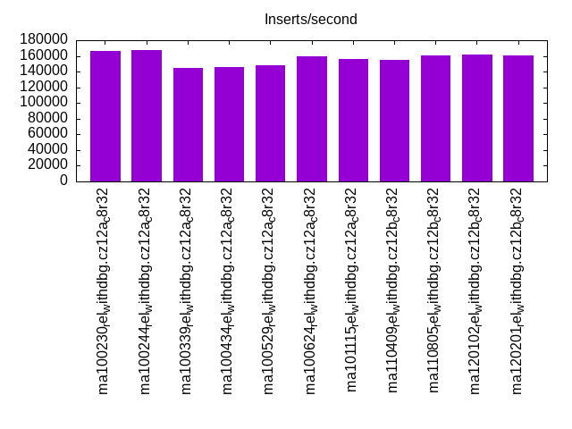
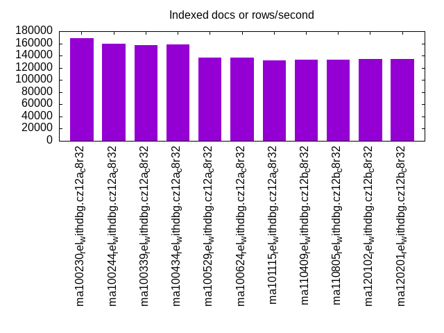
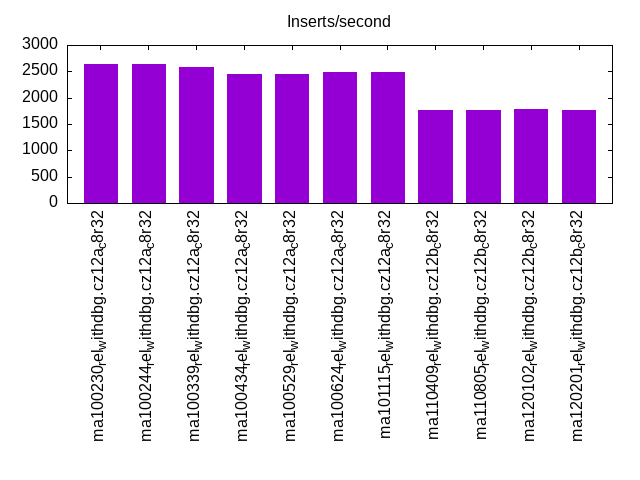
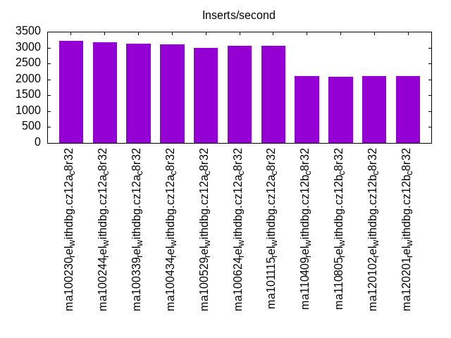
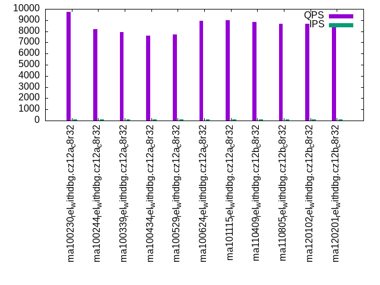
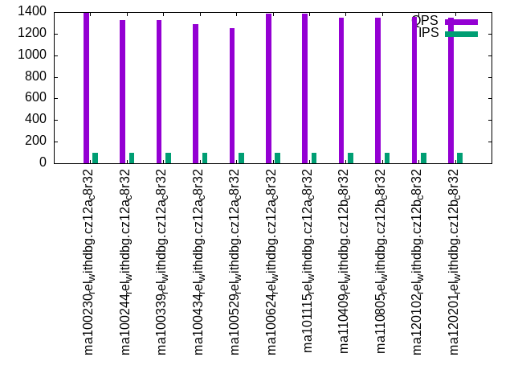
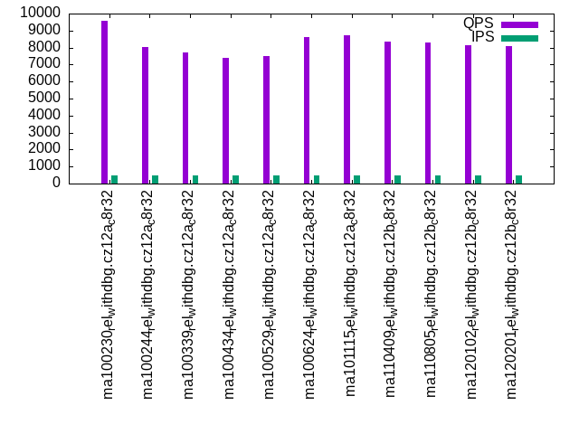
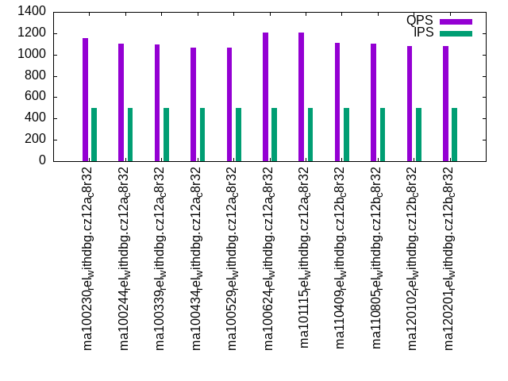
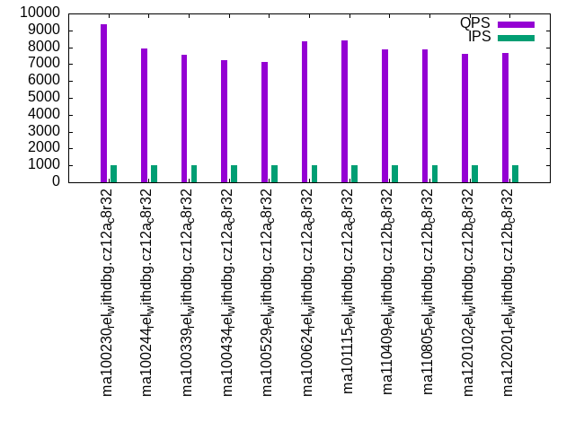
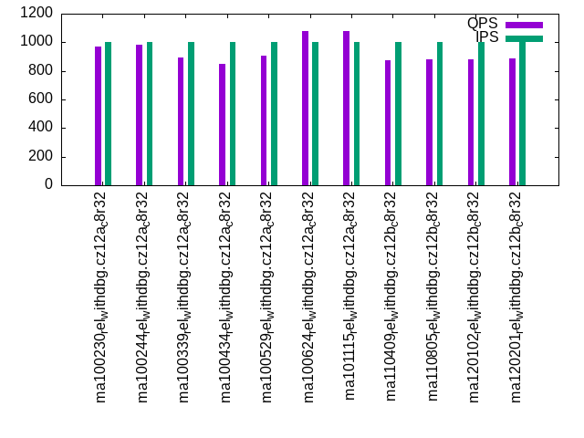

This is a report for the insert benchmark with 800M docs and 1 client(s). It is generated by scripts (bash, awk, sed) and Tufte might not be impressed. An overview of the insert benchmark is here and a short update is here. Below, by DBMS, I mean DBMS+version.config. An example is my8020.c10b40 where my means MySQL, 8020 is version 8.0.20 and c10b40 is the name for the configuration file.
The test server has 8 AMD cores, 32G RAM and an NVMe device for the database. The benchmark was run with 1 client and there were 1 or 3 connections per client (1 for queries or inserts without rate limits, 1+1 for rate limited inserts+deletes). It uses 1 table with a table per client. It loads 800M rows per table without secondary indexes, creates 3 secondary indexes per table, then inserts 4m+1m rows per table with a delete per insert to avoid growing the table. It then does 6 read+write tests for 1800s each that do queries as fast as possible with 100,100,500,500,1000,1000 inserts/s and the same for deletes/s per client concurrent with the queries. The database is larger than memory and the workload is IO-bound for except for the range query tests (qr*). Clients and the DBMS share one server.
The tested DBMS are:
The numbers are inserts/s for l.i0, l.i1 and l.i2, indexed docs (or rows) /s for l.x and queries/s for qr100, qp100 thru qr1000, qp1000" The values are the average rate over the entire test for inserts (IPS) and queries (QPS). The range of values for IPS and QPS is split into 3 parts: bottom 25%, middle 50%, top 25%. Values in the bottom 25% have a red background, values in the top 25% have a green background and values in the middle have no color. A gray background is used for values that can be ignored because the DBMS did not sustain the target insert rate. Red backgrounds are not used when the minimum value is within 80% of the max value.
| dbms | l.i0 | l.x | l.i1 | l.i2 | qr100 | qp100 | qr500 | qp500 | qr1000 | qp1000 |
|---|---|---|---|---|---|---|---|---|---|---|
| ma100230_rel_withdbg.cz12a_c8r32 | 166424 | 168670 | 2640 | 3215 | 9741 | 1390 | 9592 | 1156 | 9357 | 971 |
| ma100244_rel_withdbg.cz12a_c8r32 | 167785 | 158951 | 2637 | 3164 | 8178 | 1328 | 8010 | 1102 | 7949 | 980 |
| ma100339_rel_withdbg.cz12a_c8r32 | 145217 | 157294 | 2581 | 3125 | 7912 | 1327 | 7709 | 1093 | 7551 | 895 |
| ma100434_rel_withdbg.cz12a_c8r32 | 145270 | 158103 | 2451 | 3106 | 7580 | 1287 | 7384 | 1068 | 7217 | 848 |
| ma100529_rel_withdbg.cz12a_c8r32 | 147929 | 137245 | 2457 | 2985 | 7691 | 1253 | 7475 | 1064 | 7150 | 907 |
| ma100624_rel_withdbg.cz12a_c8r32 | 159141 | 137198 | 2494 | 3058 | 8914 | 1382 | 8643 | 1208 | 8329 | 1079 |
| ma101115_rel_withdbg.cz12a_c8r32 | 156280 | 132604 | 2478 | 3067 | 8978 | 1382 | 8701 | 1206 | 8395 | 1078 |
| ma110409_rel_withdbg.cz12b_c8r32 | 155069 | 133534 | 1757 | 2096 | 8812 | 1350 | 8326 | 1108 | 7863 | 876 |
| ma110805_rel_withdbg.cz12b_c8r32 | 160449 | 133534 | 1760 | 2088 | 8674 | 1347 | 8293 | 1103 | 7856 | 880 |
| ma120102_rel_withdbg.cz12b_c8r32 | 162305 | 134318 | 1777 | 2096 | 8658 | 1352 | 8155 | 1082 | 7603 | 884 |
| ma120201_rel_withdbg.cz12b_c8r32 | 160064 | 134544 | 1768 | 2110 | 8578 | 1351 | 8108 | 1082 | 7657 | 885 |
This table has relative throughput, throughput for the DBMS relative to the DBMS in the first line, using the absolute throughput from the previous table. Values less than 0.95 have a yellow background. Values greater than 1.05 have a blue background.
| dbms | l.i0 | l.x | l.i1 | l.i2 | qr100 | qp100 | qr500 | qp500 | qr1000 | qp1000 |
|---|---|---|---|---|---|---|---|---|---|---|
| ma100230_rel_withdbg.cz12a_c8r32 | 1.00 | 1.00 | 1.00 | 1.00 | 1.00 | 1.00 | 1.00 | 1.00 | 1.00 | 1.00 |
| ma100244_rel_withdbg.cz12a_c8r32 | 1.01 | 0.94 | 1.00 | 0.98 | 0.84 | 0.96 | 0.84 | 0.95 | 0.85 | 1.01 |
| ma100339_rel_withdbg.cz12a_c8r32 | 0.87 | 0.93 | 0.98 | 0.97 | 0.81 | 0.95 | 0.80 | 0.95 | 0.81 | 0.92 |
| ma100434_rel_withdbg.cz12a_c8r32 | 0.87 | 0.94 | 0.93 | 0.97 | 0.78 | 0.93 | 0.77 | 0.92 | 0.77 | 0.87 |
| ma100529_rel_withdbg.cz12a_c8r32 | 0.89 | 0.81 | 0.93 | 0.93 | 0.79 | 0.90 | 0.78 | 0.92 | 0.76 | 0.93 |
| ma100624_rel_withdbg.cz12a_c8r32 | 0.96 | 0.81 | 0.94 | 0.95 | 0.92 | 0.99 | 0.90 | 1.04 | 0.89 | 1.11 |
| ma101115_rel_withdbg.cz12a_c8r32 | 0.94 | 0.79 | 0.94 | 0.95 | 0.92 | 0.99 | 0.91 | 1.04 | 0.90 | 1.11 |
| ma110409_rel_withdbg.cz12b_c8r32 | 0.93 | 0.79 | 0.67 | 0.65 | 0.90 | 0.97 | 0.87 | 0.96 | 0.84 | 0.90 |
| ma110805_rel_withdbg.cz12b_c8r32 | 0.96 | 0.79 | 0.67 | 0.65 | 0.89 | 0.97 | 0.86 | 0.95 | 0.84 | 0.91 |
| ma120102_rel_withdbg.cz12b_c8r32 | 0.98 | 0.80 | 0.67 | 0.65 | 0.89 | 0.97 | 0.85 | 0.94 | 0.81 | 0.91 |
| ma120201_rel_withdbg.cz12b_c8r32 | 0.96 | 0.80 | 0.67 | 0.66 | 0.88 | 0.97 | 0.85 | 0.94 | 0.82 | 0.91 |
This lists the average rate of inserts/s for the tests that do inserts concurrent with queries. For such tests the query rate is listed in the table above. The read+write tests are setup so that the insert rate should match the target rate every second. Cells that are not at least 95% of the target have a red background to indicate a failure to satisfy the target.
| dbms | qr100.L1 | qp100.L2 | qr500.L3 | qp500.L4 | qr1000.L5 | qp1000.L6 |
|---|---|---|---|---|---|---|
| ma100230_rel_withdbg.cz12a_c8r32 | 100 | 100 | 500 | 500 | 1000 | 999 |
| ma100244_rel_withdbg.cz12a_c8r32 | 100 | 100 | 500 | 500 | 999 | 999 |
| ma100339_rel_withdbg.cz12a_c8r32 | 100 | 100 | 500 | 500 | 1000 | 1000 |
| ma100434_rel_withdbg.cz12a_c8r32 | 100 | 100 | 500 | 499 | 999 | 999 |
| ma100529_rel_withdbg.cz12a_c8r32 | 100 | 100 | 499 | 500 | 999 | 999 |
| ma100624_rel_withdbg.cz12a_c8r32 | 100 | 100 | 500 | 500 | 999 | 999 |
| ma101115_rel_withdbg.cz12a_c8r32 | 100 | 100 | 500 | 500 | 999 | 999 |
| ma110409_rel_withdbg.cz12b_c8r32 | 100 | 100 | 500 | 500 | 1000 | 999 |
| ma110805_rel_withdbg.cz12b_c8r32 | 100 | 100 | 499 | 499 | 999 | 999 |
| ma120102_rel_withdbg.cz12b_c8r32 | 100 | 100 | 500 | 500 | 999 | 999 |
| ma120201_rel_withdbg.cz12b_c8r32 | 100 | 100 | 500 | 500 | 999 | 999 |
| target | 100 | 100 | 500 | 500 | 1000 | 1000 |
l.i0: load without secondary indexes. Graphs for performance per 1-second interval are here.
Average throughput:
Insert response time histogram: each cell has the percentage of responses that take <= the time in the header and max is the max response time in seconds. For the max column values in the top 25% of the range have a red background and in the bottom 25% of the range have a green background. The red background is not used when the min value is within 80% of the max value.
| dbms | 256us | 1ms | 4ms | 16ms | 64ms | 256ms | 1s | 4s | 16s | gt | max |
|---|---|---|---|---|---|---|---|---|---|---|---|
| ma100230_rel_withdbg.cz12a_c8r32 | 99.553 | 0.184 | 0.182 | 0.076 | 0.004 | 0.178 | |||||
| ma100244_rel_withdbg.cz12a_c8r32 | 99.688 | 0.136 | 0.115 | 0.057 | 0.004 | 0.188 | |||||
| ma100339_rel_withdbg.cz12a_c8r32 | 99.447 | 0.251 | 0.259 | 0.038 | 0.004 | 0.145 | |||||
| ma100434_rel_withdbg.cz12a_c8r32 | 99.453 | 0.246 | 0.190 | 0.107 | 0.004 | 0.206 | |||||
| ma100529_rel_withdbg.cz12a_c8r32 | 99.531 | 0.195 | 0.101 | 0.168 | 0.004 | 0.194 | |||||
| ma100624_rel_withdbg.cz12a_c8r32 | 99.688 | 0.125 | 0.134 | 0.048 | 0.005 | 0.228 | |||||
| ma101115_rel_withdbg.cz12a_c8r32 | 99.588 | 0.210 | 0.058 | 0.136 | 0.009 | nonzero | 0.482 | ||||
| ma110409_rel_withdbg.cz12b_c8r32 | 99.669 | 0.138 | 0.056 | 0.133 | 0.005 | 0.212 | |||||
| ma110805_rel_withdbg.cz12b_c8r32 | 99.676 | 0.130 | 0.058 | 0.132 | 0.005 | 0.194 | |||||
| ma120102_rel_withdbg.cz12b_c8r32 | 99.675 | 0.131 | 0.060 | 0.129 | 0.005 | 0.221 | |||||
| ma120201_rel_withdbg.cz12b_c8r32 | 99.673 | 0.133 | 0.058 | 0.131 | 0.005 | 0.210 |
Performance metrics for the DBMS listed above. Some are normalized by throughput, others are not. Legend for results is here.
ips qps rps rmbps wps wmbps rpq rkbpq wpi wkbpi csps cpups cspq cpupq dbgb1 dbgb2 rss maxop p50 p99 tag 166424 0 0 0.0 1242.0 63.9 0.000 0.000 0.007 0.393 20411 20.1 0.123 10 52.6 83.4 24.1 0.178 167178 145580 ma100230_rel_withdbg.cz12a_c8r32 167785 0 0 0.0 1127.0 61.2 0.000 0.000 0.007 0.374 17297 20.1 0.103 10 52.6 83.4 24.1 0.188 168477 147283 ma100244_rel_withdbg.cz12a_c8r32 145217 0 0 0.0 1229.5 62.6 0.000 0.000 0.008 0.441 47439 27.8 0.327 15 52.6 83.4 24.1 0.145 145781 127286 ma100339_rel_withdbg.cz12a_c8r32 145270 0 0 0.0 1225.3 62.3 0.000 0.000 0.008 0.439 47486 27.4 0.327 15 52.6 83.4 NA 0.206 145784 127578 ma100434_rel_withdbg.cz12a_c8r32 147929 0 0 0.0 1242.5 49.4 0.000 0.000 0.008 0.342 63578 23.8 0.430 13 52.6 83.4 23.5 0.194 148682 129485 ma100529_rel_withdbg.cz12a_c8r32 159141 0 0 0.0 965.2 44.7 0.000 0.000 0.006 0.288 21542 22.7 0.135 11 52.6 83.4 23.4 0.228 159854 140382 ma100624_rel_withdbg.cz12a_c8r32 156280 0 0 0.0 929.5 42.0 0.000 0.000 0.006 0.275 21466 19.7 0.137 10 52.6 83.4 23.1 0.482 161280 116283 ma101115_rel_withdbg.cz12a_c8r32 155069 0 0 0.0 930.3 41.6 0.000 0.000 0.006 0.275 21103 19.9 0.136 10 52.6 83.4 23.4 0.212 156082 136081 ma110409_rel_withdbg.cz12b_c8r32 160449 0 0 0.0 962.0 43.1 0.000 0.000 0.006 0.275 21734 20.0 0.135 10 52.6 83.4 23.4 0.194 161578 140181 ma110805_rel_withdbg.cz12b_c8r32 162305 0 0 0.0 972.7 43.6 0.000 0.000 0.006 0.275 21977 20.1 0.135 10 52.6 83.4 23.4 0.221 163481 142181 ma120102_rel_withdbg.cz12b_c8r32 160064 0 0 0.0 959.6 43.0 0.000 0.000 0.006 0.275 21675 20.0 0.135 10 52.6 83.4 23.4 0.210 161081 140977 ma120201_rel_withdbg.cz12b_c8r32
Average values from iostat.
r/s rkB/s rrqm/s %rrqm r_await rareq-s w/s wkB/s wrqm/s %wrqm w_await wareq-s d/s dkB/s drqm/s %drqm d_await dareq-s f/s f_await aqu-sz %util 0.331 2.096 0.000 0.000 1.943 2.844 1243.0 65512.0 54.81 4.297 0.703 51.18 1.090 6.937 0.000 0.000 0.276 2.352 10.13 1.504 0.868 9.719 ma100230_rel_withdbg.cz12a_c8r32 0.072 0.565 0.008 0.052 0.669 0.621 1.551 9.700 0.851 35.63 15.89 6.884 0.000 0.000 0.000 0.000 0.000 0.000 0.193 4.730 0.026 1.250 ma100244_rel_withdbg.cz12a_c8r32 0.294 2.100 0.000 0.000 2.281 2.609 1230.3 64104.4 46.90 3.726 0.889 50.71 0.699 4.676 0.000 0.000 0.216 2.049 8.758 1.300 1.072 8.418 ma100339_rel_withdbg.cz12a_c8r32 0.301 2.092 0.000 0.000 2.301 2.597 1226.1 63780.9 46.44 3.712 0.927 50.63 0.918 4.863 0.000 0.000 0.255 1.663 8.636 1.628 1.115 8.795 ma100434_rel_withdbg.cz12a_c8r32 0.251 1.223 0.000 0.000 2.271 2.532 1242.8 50575.6 30.35 2.389 0.807 38.86 0.763 27.25 0.000 0.000 0.308 15.48 10.78 1.694 1.021 8.010 ma100529_rel_withdbg.cz12a_c8r32 0.289 1.423 0.001 0.041 2.371 2.815 966.0 45792.1 23.07 3.011 1.498 51.94 0.657 10.94 0.000 0.000 0.330 15.47 7.427 1.095 1.170 6.424 ma100624_rel_withdbg.cz12a_c8r32 0.276 1.356 0.000 0.000 2.546 2.658 930.3 43002.0 23.65 3.363 1.641 51.56 0.714 17.58 0.000 0.000 0.460 21.71 7.264 1.794 1.171 6.949 ma101115_rel_withdbg.cz12a_c8r32 0.289 1.401 0.003 0.109 2.457 2.790 931.1 42673.2 24.55 3.463 1.514 50.93 0.811 4.362 0.000 0.000 0.410 2.192 15.10 1.581 1.108 7.755 ma110409_rel_withdbg.cz12b_c8r32 0.296 1.427 0.000 0.000 2.426 2.790 962.8 44145.9 25.75 3.433 1.557 50.50 0.757 10.62 0.000 0.000 0.489 7.787 15.25 1.573 1.156 7.940 ma110805_rel_withdbg.cz12b_c8r32 0.279 1.375 0.000 0.000 2.509 2.812 973.5 44664.7 26.00 3.359 1.522 49.99 0.800 4.775 0.000 0.000 0.534 2.975 15.32 1.553 1.164 7.972 ma120102_rel_withdbg.cz12b_c8r32 0.275 1.349 0.000 0.000 2.417 2.774 960.4 44047.5 25.60 3.350 1.486 50.00 0.561 10.22 0.000 0.000 0.518 10.96 15.33 1.563 1.142 7.875 ma120201_rel_withdbg.cz12b_c8r32
l.x: create secondary indexes.
Average throughput:
Performance metrics for the DBMS listed above. Some are normalized by throughput, others are not. Legend for results is here.
ips qps rps rmbps wps wmbps rpq rkbpq wpi wkbpi csps cpups cspq cpupq dbgb1 dbgb2 rss maxop p50 p99 tag 168670 0 1766 163.7 2377.8 185.8 0.010 0.994 0.014 1.128 9303 12.3 0.055 6 121.1 152.0 24.3 0.001 NA NA ma100230_rel_withdbg.cz12a_c8r32 158951 0 1617 148.1 2125.1 188.2 0.010 0.954 0.013 1.212 8111 12.2 0.051 6 121.1 152.0 24.3 0.001 NA NA ma100244_rel_withdbg.cz12a_c8r32 157294 0 1673 155.9 2098.4 186.1 0.011 1.015 0.013 1.212 8055 12.1 0.051 6 121.1 152.0 24.2 0.001 NA NA ma100339_rel_withdbg.cz12a_c8r32 158103 0 1687 156.8 2133.5 187.8 0.011 1.016 0.013 1.216 7969 12.1 0.050 6 119.9 150.7 NA 0.001 NA NA ma100434_rel_withdbg.cz12a_c8r32 137245 0 1463 136.0 1775.4 154.0 0.011 1.015 0.013 1.149 4237 12.1 0.031 7 119.9 150.7 23.6 0.001 NA NA ma100529_rel_withdbg.cz12a_c8r32 137198 0 1458 135.8 1799.9 154.3 0.011 1.014 0.013 1.152 4918 12.2 0.036 7 111.5 142.3 23.4 0.001 NA NA ma100624_rel_withdbg.cz12a_c8r32 132604 0 1413 131.5 1587.7 146.4 0.011 1.016 0.012 1.131 4352 12.0 0.033 7 111.5 142.3 23.1 0.001 NA NA ma101115_rel_withdbg.cz12a_c8r32 133534 0 1421 132.2 1599.3 147.4 0.011 1.014 0.012 1.131 4404 12.1 0.033 7 111.5 142.3 23.4 0.001 NA NA ma110409_rel_withdbg.cz12b_c8r32 133534 0 1421 132.2 1599.0 147.4 0.011 1.014 0.012 1.131 4423 12.1 0.033 7 111.5 142.3 23.4 0.001 NA NA ma110805_rel_withdbg.cz12b_c8r32 134318 0 1430 133.0 1607.3 148.3 0.011 1.014 0.012 1.131 4458 12.1 0.033 7 111.5 142.3 23.4 0.001 NA NA ma120102_rel_withdbg.cz12b_c8r32 134544 0 1432 133.2 1611.9 148.6 0.011 1.014 0.012 1.131 4388 12.1 0.033 7 111.5 142.3 23.4 0.001 NA NA ma120201_rel_withdbg.cz12b_c8r32
Average values from iostat.
r/s rkB/s rrqm/s %rrqm r_await rareq-s w/s wkB/s wrqm/s %wrqm w_await wareq-s d/s dkB/s drqm/s %drqm d_await dareq-s f/s f_await aqu-sz %util 1765.5 167724 0.000 0.000 0.140 97.27 2380.0 190472 20.71 0.597 0.114 116.5 0.574 10727.7 0.000 0.000 0.002 89.38 4.054 1.949 0.497 22.45 ma100230_rel_withdbg.cz12a_c8r32 85.77 1524.8 294.3 8.050 1.602 3.098 15.48 1668.3 401.6 40.81 18.87 8.869 0.000 0.000 0.000 0.000 0.000 0.000 0.186 6.006 0.037 2.121 ma100244_rel_withdbg.cz12a_c8r32 1672.0 159787 0.000 0.000 0.148 101.8 2100.2 190717 21.02 0.634 0.272 114.7 0.933 13256.7 0.000 0.000 0.004 62.75 3.833 2.005 1.241 21.99 ma100339_rel_withdbg.cz12a_c8r32 1686.5 160712 0.000 0.000 0.148 101.3 2135.3 192428 21.05 0.611 0.262 115.9 0.791 6504.9 0.000 0.000 0.002 24.75 3.775 2.035 1.202 21.81 ma100434_rel_withdbg.cz12a_c8r32 1462.9 139385 0.000 0.000 0.160 103.6 1776.7 157833 21.73 1.418 0.916 122.4 0.694 5639.4 0.000 0.000 0.003 22.11 6.291 2.426 1.421 20.30 ma100529_rel_withdbg.cz12a_c8r32 1457.7 139186 0.000 0.000 0.142 103.1 1800.7 158127 18.06 1.296 0.675 121.8 0.493 5634.7 0.000 0.000 0.002 22.30 5.734 2.211 1.410 20.07 ma100624_rel_withdbg.cz12a_c8r32 1412.7 134785 0.000 0.000 0.143 103.2 1585.5 150010 14.24 1.360 0.598 117.5 0.416 5448.2 0.000 0.000 0.004 32.20 5.713 3.283 0.870 20.03 ma101115_rel_withdbg.cz12a_c8r32 1420.4 135488 0.000 0.000 0.142 102.9 1597.1 151027 15.12 1.320 0.638 117.7 0.440 5484.7 0.000 0.000 0.002 39.35 6.277 2.650 0.938 19.62 ma110409_rel_withdbg.cz12b_c8r32 1420.9 135500 0.000 0.000 0.145 103.8 1597.2 151034 15.08 1.349 0.606 117.4 0.599 9892.2 0.000 0.000 0.002 48.78 6.288 2.596 0.883 19.74 ma110805_rel_withdbg.cz12b_c8r32 1429.5 136299 0.000 0.000 0.144 103.5 1608.4 151955 15.02 1.362 0.633 117.4 0.675 10279.2 0.000 0.000 0.003 42.37 6.321 2.535 0.885 19.88 ma120102_rel_withdbg.cz12b_c8r32 1431.4 136522 0.000 0.000 0.145 103.6 1611.3 152211 15.10 1.328 0.651 117.4 0.511 8792.3 0.000 0.000 0.003 79.27 6.325 2.612 0.944 19.89 ma120201_rel_withdbg.cz12b_c8r32
l.i1: continue load after secondary indexes created with 50 inserts per transaction. Graphs for performance per 1-second interval are here.
Average throughput:
Insert response time histogram: each cell has the percentage of responses that take <= the time in the header and max is the max response time in seconds. For the max column values in the top 25% of the range have a red background and in the bottom 25% of the range have a green background. The red background is not used when the min value is within 80% of the max value.
| dbms | 256us | 1ms | 4ms | 16ms | 64ms | 256ms | 1s | 4s | 16s | gt | max |
|---|---|---|---|---|---|---|---|---|---|---|---|
| ma100230_rel_withdbg.cz12a_c8r32 | 63.576 | 35.946 | 0.477 | 0.134 | |||||||
| ma100244_rel_withdbg.cz12a_c8r32 | 62.851 | 36.894 | 0.255 | 0.101 | |||||||
| ma100339_rel_withdbg.cz12a_c8r32 | 60.208 | 39.517 | 0.275 | 0.126 | |||||||
| ma100434_rel_withdbg.cz12a_c8r32 | 58.751 | 39.650 | 1.597 | 0.001 | 2.552 | ||||||
| ma100529_rel_withdbg.cz12a_c8r32 | 45.754 | 52.409 | 1.836 | 0.001 | 3.249 | ||||||
| ma100624_rel_withdbg.cz12a_c8r32 | 59.579 | 38.682 | 1.738 | 0.001 | 2.601 | ||||||
| ma101115_rel_withdbg.cz12a_c8r32 | 59.775 | 38.289 | 1.929 | 0.006 | 0.001 | 3.042 | |||||
| ma110409_rel_withdbg.cz12b_c8r32 | 45.885 | 44.770 | 9.333 | 0.011 | 0.001 | 3.029 | |||||
| ma110805_rel_withdbg.cz12b_c8r32 | 46.371 | 44.396 | 9.227 | 0.004 | 0.001 | 3.002 | |||||
| ma120102_rel_withdbg.cz12b_c8r32 | 48.029 | 42.328 | 9.643 | 0.001 | 2.899 | ||||||
| ma120201_rel_withdbg.cz12b_c8r32 | 47.250 | 43.409 | 9.330 | 0.010 | 0.001 | 2.382 |
Delete response time histogram: each cell has the percentage of responses that take <= the time in the header and max is the max response time in seconds. For the max column values in the top 25% of the range have a red background and in the bottom 25% of the range have a green background. The red background is not used when the min value is within 80% of the max value.
| dbms | 256us | 1ms | 4ms | 16ms | 64ms | 256ms | 1s | 4s | 16s | gt | max |
|---|---|---|---|---|---|---|---|---|---|---|---|
| ma100230_rel_withdbg.cz12a_c8r32 | 85.754 | 14.245 | 0.001 | 0.073 | |||||||
| ma100244_rel_withdbg.cz12a_c8r32 | 85.488 | 14.511 | 0.001 | 0.070 | |||||||
| ma100339_rel_withdbg.cz12a_c8r32 | 85.788 | 14.211 | 0.001 | 0.069 | |||||||
| ma100434_rel_withdbg.cz12a_c8r32 | 84.515 | 15.482 | 0.001 | 0.001 | 2.503 | ||||||
| ma100529_rel_withdbg.cz12a_c8r32 | 92.186 | 7.810 | 0.003 | 0.001 | 3.194 | ||||||
| ma100624_rel_withdbg.cz12a_c8r32 | 84.266 | 15.731 | 0.001 | 0.001 | 2.568 | ||||||
| ma101115_rel_withdbg.cz12a_c8r32 | 84.324 | 15.664 | 0.009 | 0.003 | 0.001 | 3.001 | |||||
| ma110409_rel_withdbg.cz12b_c8r32 | 69.181 | 30.690 | 0.121 | 0.006 | 0.001 | 2.968 | |||||
| ma110805_rel_withdbg.cz12b_c8r32 | 69.017 | 30.855 | 0.126 | 0.001 | 2.965 | ||||||
| ma120102_rel_withdbg.cz12b_c8r32 | 70.494 | 29.410 | 0.095 | 0.001 | 2.868 | ||||||
| ma120201_rel_withdbg.cz12b_c8r32 | 69.575 | 30.324 | 0.095 | 0.005 | 0.001 | 2.343 |
Performance metrics for the DBMS listed above. Some are normalized by throughput, others are not. Legend for results is here.
ips qps rps rmbps wps wmbps rpq rkbpq wpi wkbpi csps cpups cspq cpupq dbgb1 dbgb2 rss maxop p50 p99 tag 2640 0 12542 196.0 17251.1 498.7 4.750 76.007 6.534 193.419 36908 20.3 13.979 615 144.4 175.3 24.2 0.134 2700 1550 ma100230_rel_withdbg.cz12a_c8r32 2637 0 12482 195.0 17240.0 498.3 4.734 75.738 6.538 193.506 34696 21.5 13.159 652 144.5 175.3 24.1 0.101 2700 1550 ma100244_rel_withdbg.cz12a_c8r32 2581 0 12215 190.9 16914.6 488.9 4.733 75.735 6.555 193.986 40497 20.2 15.693 626 144.5 175.3 24.2 0.126 2650 1550 ma100339_rel_withdbg.cz12a_c8r32 2451 0 11765 183.8 17684.2 509.4 4.800 76.804 7.215 212.818 38671 19.8 15.778 646 144.4 175.3 NA 2.552 2600 1100 ma100434_rel_withdbg.cz12a_c8r32 2457 0 11586 181.0 15309.4 415.6 4.715 75.447 6.231 173.222 82797 16.6 33.699 541 144.4 175.2 23.6 3.249 2550 1450 ma100529_rel_withdbg.cz12a_c8r32 2494 0 11557 180.6 13672.8 372.7 4.635 74.153 5.483 153.052 96767 17.9 38.805 574 133.0 163.8 23.4 2.601 2500 1450 ma100624_rel_withdbg.cz12a_c8r32 2478 0 11494 179.6 13959.7 373.4 4.638 74.203 5.633 154.274 98772 18.0 39.855 581 133.0 163.8 23.2 3.042 2500 1200 ma101115_rel_withdbg.cz12a_c8r32 1757 0 8226 128.5 9468.8 250.2 4.683 74.927 5.390 145.875 75242 11.9 42.834 542 133.0 163.8 23.5 3.029 1750 650 ma110409_rel_withdbg.cz12b_c8r32 1760 0 8229 128.6 9568.7 253.0 4.676 74.820 5.438 147.199 75839 11.8 43.098 536 133.0 163.8 23.5 3.002 1750 600 ma110805_rel_withdbg.cz12b_c8r32 1777 0 8315 129.9 9468.2 250.2 4.680 74.875 5.329 144.175 75917 11.8 42.724 531 133.0 163.8 23.5 2.899 1800 600 ma120102_rel_withdbg.cz12b_c8r32 1768 0 8265 129.1 9686.9 256.1 4.676 74.815 5.481 148.350 76404 11.8 43.227 534 133.0 163.8 23.5 2.382 1800 650 ma120201_rel_withdbg.cz12b_c8r32
Average values from iostat.
r/s rkB/s rrqm/s %rrqm r_await rareq-s w/s wkB/s wrqm/s %wrqm w_await wareq-s d/s dkB/s drqm/s %drqm d_await dareq-s f/s f_await aqu-sz %util 12544.7 200714 0.000 0.000 0.118 16.00 17302.0 512127 55.17 0.389 0.123 29.64 0.007 0.342 0.000 0.000 0.030 1.709 8.797 3.232 3.598 84.44 ma100230_rel_withdbg.cz12a_c8r32 64.96 350.3 22.45 21.92 0.389 5.189 0.963 6.636 0.604 38.77 0.881 7.731 0.000 0.000 0.000 0.000 0.000 0.000 0.182 1.055 0.020 1.808 ma100244_rel_withdbg.cz12a_c8r32 12221.0 195535 0.000 0.000 0.117 16.00 16936.5 501234 54.94 0.362 0.108 29.60 0.004 0.208 0.000 0.000 0.010 1.026 9.199 3.284 3.300 83.17 ma100339_rel_withdbg.cz12a_c8r32 11785.7 188571 0.000 0.000 0.121 16.00 17698.5 522038 72.25 0.427 0.109 29.51 0.018 0.263 0.000 0.000 0.055 1.255 11.84 3.305 3.384 83.48 ma100434_rel_withdbg.cz12a_c8r32 11610.4 185767 0.000 0.000 0.110 16.00 15343.9 426695 47.89 0.376 0.154 27.66 0.004 3.963 0.000 0.000 0.028 19.81 15.64 2.924 3.591 83.71 ma100529_rel_withdbg.cz12a_c8r32 11576.0 185216 0.000 0.000 0.097 16.00 13707.3 382689 23.03 0.295 0.133 28.00 0.006 0.025 0.000 0.000 0.027 0.088 18.82 2.791 2.947 76.36 ma100624_rel_withdbg.cz12a_c8r32 11516.6 184264 0.000 0.000 0.097 16.00 13991.5 383315 65.29 0.689 0.130 27.65 0.007 0.030 0.000 0.000 0.022 0.112 17.17 2.826 2.946 75.87 ma101115_rel_withdbg.cz12a_c8r32 8234.7 131755 0.000 0.000 0.161 16.00 9481.4 256656 80.38 0.934 0.340 27.39 0.004 0.685 0.000 0.000 0.031 3.427 123.6 2.928 4.905 83.97 ma110409_rel_withdbg.cz12b_c8r32 8237.2 131795 0.000 0.000 0.162 16.00 9581.6 259450 80.37 0.986 0.345 27.64 0.003 0.012 0.000 0.000 0.022 0.062 124.7 2.931 4.909 84.25 ma110805_rel_withdbg.cz12b_c8r32 8322.9 133164 0.000 0.000 0.160 16.00 9482.9 256631 75.38 0.872 0.339 27.34 0.006 0.029 0.000 0.000 0.042 0.143 124.3 2.921 4.902 84.00 ma120102_rel_withdbg.cz12b_c8r32 8270.2 132321 0.000 0.000 0.162 16.00 9701.9 262663 78.41 0.902 0.329 27.41 0.007 0.708 0.000 0.000 0.031 1.809 126.4 2.898 4.895 84.24 ma120201_rel_withdbg.cz12b_c8r32
l.i2: continue load after secondary indexes created with 5 inserts per transaction. Graphs for performance per 1-second interval are here.
Average throughput:
Insert response time histogram: each cell has the percentage of responses that take <= the time in the header and max is the max response time in seconds. For the max column values in the top 25% of the range have a red background and in the bottom 25% of the range have a green background. The red background is not used when the min value is within 80% of the max value.
| dbms | 256us | 1ms | 4ms | 16ms | 64ms | 256ms | 1s | 4s | 16s | gt | max |
|---|---|---|---|---|---|---|---|---|---|---|---|
| ma100230_rel_withdbg.cz12a_c8r32 | 29.489 | 64.648 | 5.851 | 0.013 | 0.030 | ||||||
| ma100244_rel_withdbg.cz12a_c8r32 | 25.994 | 68.212 | 5.784 | 0.009 | 0.042 | ||||||
| ma100339_rel_withdbg.cz12a_c8r32 | 23.675 | 70.557 | 5.758 | 0.010 | 0.028 | ||||||
| ma100434_rel_withdbg.cz12a_c8r32 | 22.040 | 71.996 | 5.957 | 0.006 | 0.022 | ||||||
| ma100529_rel_withdbg.cz12a_c8r32 | 19.445 | 76.296 | 4.247 | 0.011 | 0.024 | ||||||
| ma100624_rel_withdbg.cz12a_c8r32 | 19.671 | 74.406 | 5.874 | 0.050 | 0.022 | ||||||
| ma101115_rel_withdbg.cz12a_c8r32 | 0.001 | 20.322 | 73.823 | 5.790 | 0.063 | 0.038 | |||||
| ma110409_rel_withdbg.cz12b_c8r32 | 14.883 | 68.601 | 15.938 | 0.577 | 0.045 | ||||||
| ma110805_rel_withdbg.cz12b_c8r32 | 15.692 | 67.276 | 16.479 | 0.553 | 0.052 | ||||||
| ma120102_rel_withdbg.cz12b_c8r32 | 15.898 | 67.320 | 16.223 | 0.559 | 0.063 | ||||||
| ma120201_rel_withdbg.cz12b_c8r32 | 15.754 | 67.576 | 16.095 | 0.576 | 0.057 |
Delete response time histogram: each cell has the percentage of responses that take <= the time in the header and max is the max response time in seconds. For the max column values in the top 25% of the range have a red background and in the bottom 25% of the range have a green background. The red background is not used when the min value is within 80% of the max value.
| dbms | 256us | 1ms | 4ms | 16ms | 64ms | 256ms | 1s | 4s | 16s | gt | max |
|---|---|---|---|---|---|---|---|---|---|---|---|
| ma100230_rel_withdbg.cz12a_c8r32 | 0.010 | 79.049 | 18.762 | 2.174 | 0.005 | 0.023 | |||||
| ma100244_rel_withdbg.cz12a_c8r32 | 0.006 | 76.526 | 21.395 | 2.068 | 0.004 | 0.021 | |||||
| ma100339_rel_withdbg.cz12a_c8r32 | 0.006 | 75.231 | 22.714 | 2.047 | 0.002 | 0.020 | |||||
| ma100434_rel_withdbg.cz12a_c8r32 | 0.003 | 74.183 | 23.757 | 2.055 | 0.002 | 0.020 | |||||
| ma100529_rel_withdbg.cz12a_c8r32 | 0.014 | 66.567 | 31.350 | 2.063 | 0.006 | 0.023 | |||||
| ma100624_rel_withdbg.cz12a_c8r32 | 0.006 | 57.728 | 39.245 | 3.003 | 0.017 | 0.020 | |||||
| ma101115_rel_withdbg.cz12a_c8r32 | 0.009 | 57.694 | 39.279 | 2.994 | 0.023 | 0.037 | |||||
| ma110409_rel_withdbg.cz12b_c8r32 | 0.002 | 45.480 | 43.978 | 10.217 | 0.323 | 0.045 | |||||
| ma110805_rel_withdbg.cz12b_c8r32 | 0.003 | 45.922 | 43.033 | 10.691 | 0.349 | 0.049 | |||||
| ma120102_rel_withdbg.cz12b_c8r32 | 0.003 | 47.517 | 41.794 | 10.356 | 0.330 | 0.043 | |||||
| ma120201_rel_withdbg.cz12b_c8r32 | 0.003 | 46.137 | 43.401 | 10.117 | 0.342 | 0.053 |
Performance metrics for the DBMS listed above. Some are normalized by throughput, others are not. Legend for results is here.
ips qps rps rmbps wps wmbps rpq rkbpq wpi wkbpi csps cpups cspq cpupq dbgb1 dbgb2 rss maxop p50 p99 tag 3215 0 13754 214.9 19001.3 546.0 4.278 68.442 5.909 173.897 65239 26.1 20.290 649 144.4 175.3 24.2 0.030 3225 2820 ma100230_rel_withdbg.cz12a_c8r32 3164 0 13520 211.3 18692.8 537.0 4.273 68.360 5.907 173.782 59121 26.5 18.683 670 144.5 175.3 24.1 0.042 3180 2815 ma100244_rel_withdbg.cz12a_c8r32 3125 0 13334 208.3 18485.1 531.2 4.267 68.271 5.915 174.049 68703 26.1 21.985 668 144.5 175.3 24.2 0.028 3140 2835 ma100339_rel_withdbg.cz12a_c8r32 3106 0 13416 209.6 18523.3 532.0 4.320 69.120 5.965 175.417 68423 25.8 22.033 665 144.4 175.3 NA 0.022 3105 2800 ma100434_rel_withdbg.cz12a_c8r32 2985 0 12611 197.0 16075.4 445.2 4.225 67.595 5.385 152.729 115238 21.1 38.606 566 144.4 175.2 23.6 0.024 3000 2815 ma100529_rel_withdbg.cz12a_c8r32 3058 0 12740 199.1 14149.9 394.2 4.166 66.656 4.627 131.995 111456 21.1 36.446 552 133.0 163.8 23.4 0.022 3035 2105 ma100624_rel_withdbg.cz12a_c8r32 3067 0 12794 199.9 14035.2 390.8 4.171 66.738 4.576 130.465 112007 21.1 36.515 550 133.0 163.8 23.2 0.038 3060 2030 ma101115_rel_withdbg.cz12a_c8r32 2096 0 8861 138.4 9279.8 255.2 4.227 67.625 4.427 124.654 85078 14.2 40.583 542 133.0 163.8 23.5 0.045 2140 830 ma110409_rel_withdbg.cz12b_c8r32 2088 0 8805 137.6 9406.9 258.3 4.218 67.486 4.506 126.706 85384 14.2 40.900 544 133.0 163.8 23.5 0.052 2135 805 ma110805_rel_withdbg.cz12b_c8r32 2096 0 8874 138.7 9413.3 258.6 4.233 67.727 4.490 126.311 85871 14.2 40.961 542 133.0 163.8 23.5 0.063 2100 805 ma120102_rel_withdbg.cz12b_c8r32 2110 0 8904 139.1 9510.7 261.3 4.221 67.530 4.508 126.820 86070 14.2 40.797 539 133.0 163.8 23.5 0.057 2190 805 ma120201_rel_withdbg.cz12b_c8r32
Average values from iostat.
r/s rkB/s rrqm/s %rrqm r_await rareq-s w/s wkB/s wrqm/s %wrqm w_await wareq-s d/s dkB/s drqm/s %drqm d_await dareq-s f/s f_await aqu-sz %util 13750.0 220000 0.000 0.000 0.122 16.00 19030.4 560002 26.68 0.140 0.096 29.43 0.030 8.184 0.000 0.000 0.074 30.49 4.934 3.456 3.531 85.94 ma100230_rel_withdbg.cz12a_c8r32 3.323 14.81 0.200 5.501 0.904 4.407 0.948 9.045 0.655 33.17 1.551 7.769 0.000 0.000 0.000 0.000 0.000 0.000 0.181 1.048 0.002 0.345 ma100244_rel_withdbg.cz12a_c8r32 13339.3 213428 0.000 0.000 0.122 16.00 18501.7 544391 28.23 0.152 0.092 29.42 0.025 5.740 0.000 0.000 0.095 23.87 5.692 3.532 3.352 84.55 ma100339_rel_withdbg.cz12a_c8r32 13417.0 214672 0.000 0.000 0.121 16.00 18522.6 544741 30.36 0.163 0.092 29.41 0.032 0.216 0.000 0.000 0.103 0.825 5.959 3.479 3.357 84.76 ma100434_rel_withdbg.cz12a_c8r32 12606.0 201696 0.000 0.000 0.113 16.00 16097.8 456529 10.46 0.065 0.118 28.36 0.031 0.492 0.000 0.000 0.092 1.815 8.049 3.379 3.362 84.98 ma100529_rel_withdbg.cz12a_c8r32 12749.5 203993 0.000 0.000 0.098 16.00 14157.8 403908 1.206 0.010 0.115 28.55 0.019 0.138 0.000 0.000 0.094 0.688 10.18 3.158 2.914 76.33 ma100624_rel_withdbg.cz12a_c8r32 12794.4 204710 0.000 0.000 0.099 16.00 14070.9 401205 43.16 0.307 0.115 28.54 0.034 0.263 0.000 0.000 0.133 1.219 10.12 3.200 2.901 76.18 ma101115_rel_withdbg.cz12a_c8r32 8859.2 141748 0.000 0.000 0.169 16.00 9286.2 261513 29.43 0.316 0.202 28.21 0.015 0.060 0.000 0.000 0.085 0.298 127.0 3.019 3.755 83.57 ma110409_rel_withdbg.cz12b_c8r32 8810.5 140968 0.000 0.000 0.174 16.00 9390.7 264113 32.30 0.344 0.211 28.17 0.019 0.332 0.000 0.000 0.080 1.149 128.0 3.057 3.890 84.06 ma110805_rel_withdbg.cz12b_c8r32 8898.5 142376 0.000 0.000 0.172 16.00 9383.3 264094 32.67 0.346 0.209 28.19 0.015 0.162 0.000 0.000 0.096 0.809 128.1 3.013 3.867 84.05 ma120102_rel_withdbg.cz12b_c8r32 8915.0 142640 0.000 0.000 0.171 16.00 9500.2 267305 32.73 0.340 0.204 28.19 0.045 0.663 0.000 0.000 0.097 1.764 129.6 2.972 3.835 83.90 ma120201_rel_withdbg.cz12b_c8r32
qr100.L1: range queries with 100 insert/s per client. Graphs for performance per 1-second interval are here.
Average throughput:
Query response time histogram: each cell has the percentage of responses that take <= the time in the header and max is the max response time in seconds. For max values in the top 25% of the range have a red background and in the bottom 25% of the range have a green background. The red background is not used when the min value is within 80% of the max value.
| dbms | 256us | 1ms | 4ms | 16ms | 64ms | 256ms | 1s | 4s | 16s | gt | max |
|---|---|---|---|---|---|---|---|---|---|---|---|
| ma100230_rel_withdbg.cz12a_c8r32 | 99.906 | 0.086 | 0.004 | 0.004 | nonzero | 0.018 | |||||
| ma100244_rel_withdbg.cz12a_c8r32 | 99.848 | 0.140 | 0.006 | 0.005 | nonzero | 0.020 | |||||
| ma100339_rel_withdbg.cz12a_c8r32 | 99.807 | 0.181 | 0.007 | 0.006 | 0.015 | ||||||
| ma100434_rel_withdbg.cz12a_c8r32 | 99.669 | 0.316 | 0.008 | 0.006 | nonzero | 0.018 | |||||
| ma100529_rel_withdbg.cz12a_c8r32 | 99.777 | 0.210 | 0.006 | 0.007 | 0.012 | ||||||
| ma100624_rel_withdbg.cz12a_c8r32 | 99.793 | 0.180 | 0.014 | 0.014 | 0.014 | ||||||
| ma101115_rel_withdbg.cz12a_c8r32 | 99.800 | 0.173 | 0.013 | 0.014 | 0.014 | ||||||
| ma110409_rel_withdbg.cz12b_c8r32 | 99.761 | 0.206 | 0.018 | 0.015 | nonzero | 0.017 | |||||
| ma110805_rel_withdbg.cz12b_c8r32 | 99.746 | 0.220 | 0.019 | 0.015 | nonzero | 0.022 | |||||
| ma120102_rel_withdbg.cz12b_c8r32 | 99.745 | 0.222 | 0.018 | 0.015 | nonzero | 0.022 | |||||
| ma120201_rel_withdbg.cz12b_c8r32 | 99.744 | 0.222 | 0.019 | 0.015 | 0.016 |
Insert response time histogram: each cell has the percentage of responses that take <= the time in the header and max is the max response time in seconds. For max values in the top 25% of the range have a red background and in the bottom 25% of the range have a green background. The red background is not used when the min value is within 80% of the max value.
| dbms | 256us | 1ms | 4ms | 16ms | 64ms | 256ms | 1s | 4s | 16s | gt | max |
|---|---|---|---|---|---|---|---|---|---|---|---|
| ma100230_rel_withdbg.cz12a_c8r32 | 62.889 | 37.056 | 0.056 | 0.080 | |||||||
| ma100244_rel_withdbg.cz12a_c8r32 | 63.167 | 36.778 | 0.056 | 0.076 | |||||||
| ma100339_rel_withdbg.cz12a_c8r32 | 62.611 | 37.333 | 0.056 | 0.068 | |||||||
| ma100434_rel_withdbg.cz12a_c8r32 | 62.722 | 37.250 | 0.028 | 0.070 | |||||||
| ma100529_rel_withdbg.cz12a_c8r32 | 57.500 | 42.500 | 0.037 | ||||||||
| ma100624_rel_withdbg.cz12a_c8r32 | 55.889 | 44.111 | 0.034 | ||||||||
| ma101115_rel_withdbg.cz12a_c8r32 | 55.889 | 44.111 | 0.033 | ||||||||
| ma110409_rel_withdbg.cz12b_c8r32 | 53.639 | 46.361 | 0.058 | ||||||||
| ma110805_rel_withdbg.cz12b_c8r32 | 54.111 | 45.889 | 0.062 | ||||||||
| ma120102_rel_withdbg.cz12b_c8r32 | 54.167 | 45.778 | 0.056 | 0.084 | |||||||
| ma120201_rel_withdbg.cz12b_c8r32 | 53.778 | 46.222 | 0.059 |
Delete response time histogram: each cell has the percentage of responses that take <= the time in the header and max is the max response time in seconds. For max values in the top 25% of the range have a red background and in the bottom 25% of the range have a green background. The red background is not used when the min value is within 80% of the max value.
| dbms | 256us | 1ms | 4ms | 16ms | 64ms | 256ms | 1s | 4s | 16s | gt | max |
|---|---|---|---|---|---|---|---|---|---|---|---|
| ma100230_rel_withdbg.cz12a_c8r32 | 91.833 | 8.167 | 0.056 | ||||||||
| ma100244_rel_withdbg.cz12a_c8r32 | 89.361 | 10.639 | 0.050 | ||||||||
| ma100339_rel_withdbg.cz12a_c8r32 | 90.389 | 9.611 | 0.048 | ||||||||
| ma100434_rel_withdbg.cz12a_c8r32 | 77.000 | 22.972 | 0.028 | 0.064 | |||||||
| ma100529_rel_withdbg.cz12a_c8r32 | 67.750 | 32.250 | 0.024 | ||||||||
| ma100624_rel_withdbg.cz12a_c8r32 | 65.278 | 34.722 | 0.027 | ||||||||
| ma101115_rel_withdbg.cz12a_c8r32 | 66.389 | 33.611 | 0.043 | ||||||||
| ma110409_rel_withdbg.cz12b_c8r32 | 59.000 | 41.000 | 0.039 | ||||||||
| ma110805_rel_withdbg.cz12b_c8r32 | 59.194 | 40.806 | 0.043 | ||||||||
| ma120102_rel_withdbg.cz12b_c8r32 | 60.111 | 39.889 | 0.041 | ||||||||
| ma120201_rel_withdbg.cz12b_c8r32 | 59.722 | 40.278 | 0.040 |
Performance metrics for the DBMS listed above. Some are normalized by throughput, others are not. Legend for results is here.
ips qps rps rmbps wps wmbps rpq rkbpq wpi wkbpi csps cpups cspq cpupq dbgb1 dbgb2 rss maxop p50 p99 tag 100 9741 464 7.2 1509.4 42.3 0.048 0.762 15.109 433.555 58238 12.4 5.978 102 144.4 175.3 24.2 0.018 9806 9039 ma100230_rel_withdbg.cz12a_c8r32 100 8178 463 7.2 1515.2 42.5 0.057 0.907 15.152 434.714 33580 12.5 4.106 122 144.5 175.3 24.1 0.020 8223 7407 ma100244_rel_withdbg.cz12a_c8r32 100 7912 464 7.2 1507.6 42.2 0.059 0.938 15.076 432.571 32838 12.4 4.151 125 144.5 175.3 24.2 0.015 7967 7055 ma100339_rel_withdbg.cz12a_c8r32 100 7580 469 7.3 1508.0 42.3 0.062 0.990 15.080 432.706 31595 13.2 4.168 139 144.4 175.3 NA 0.018 7615 6959 ma100434_rel_withdbg.cz12a_c8r32 100 7691 456 7.1 94.8 3.1 0.059 0.949 0.948 31.753 32395 11.7 4.212 122 144.4 175.2 23.6 0.012 7727 7007 ma100529_rel_withdbg.cz12a_c8r32 100 8914 453 7.1 91.0 3.0 0.051 0.813 0.911 30.637 53013 12.4 5.948 111 133.0 163.8 23.4 0.014 8959 8463 ma100624_rel_withdbg.cz12a_c8r32 100 8978 453 7.1 91.4 3.0 0.050 0.808 0.914 30.554 53391 12.4 5.947 110 133.0 163.8 23.2 0.014 9023 8367 ma101115_rel_withdbg.cz12a_c8r32 100 8812 459 7.2 107.4 3.4 0.052 0.833 1.074 34.583 52703 12.4 5.981 113 133.0 163.8 23.4 0.017 8863 8111 ma110409_rel_withdbg.cz12b_c8r32 100 8674 459 7.2 108.8 3.4 0.053 0.847 1.088 34.959 51926 12.7 5.986 117 133.0 163.8 23.4 0.022 8719 8127 ma110805_rel_withdbg.cz12b_c8r32 100 8658 460 7.2 109.6 3.4 0.053 0.851 1.097 35.221 51863 12.8 5.990 118 133.0 163.8 23.4 0.022 8703 7999 ma120102_rel_withdbg.cz12b_c8r32 100 8578 459 7.2 108.8 3.4 0.054 0.856 1.088 34.949 51362 12.9 5.988 120 133.0 163.8 23.4 0.016 8623 7871 ma120201_rel_withdbg.cz12b_c8r32
Average values from iostat.
r/s rkB/s rrqm/s %rrqm r_await rareq-s w/s wkB/s wrqm/s %wrqm w_await wareq-s d/s dkB/s drqm/s %drqm d_await dareq-s f/s f_await aqu-sz %util 444.8 7117.5 0.000 0.000 0.115 16.00 1510.0 43329.1 7.028 0.461 0.086 28.70 0.006 2.273 0.000 0.000 0.019 11.36 1.621 1.758 0.181 6.974 ma100230_rel_withdbg.cz12a_c8r32 0.035 0.370 0.001 0.209 1.190 0.382 1.533 9.518 0.809 34.64 17.10 6.682 0.000 0.000 0.000 0.000 0.000 0.000 0.194 4.696 0.028 1.255 ma100244_rel_withdbg.cz12a_c8r32 445.8 7133.2 0.000 0.000 0.115 16.00 1508.1 43269.7 6.924 0.455 0.087 28.70 0.009 2.710 0.000 0.000 0.031 13.55 1.653 1.712 0.184 6.877 ma100339_rel_withdbg.cz12a_c8r32 450.8 7213.6 0.000 0.000 0.116 16.00 1508.5 43285.6 7.353 0.482 0.086 28.70 0.009 0.074 0.000 0.000 0.028 0.368 1.657 1.660 0.183 6.890 ma100434_rel_withdbg.cz12a_c8r32 438.2 7010.9 0.000 0.000 0.125 16.00 95.06 3182.3 0.537 3.465 2.588 67.34 0.009 0.216 0.000 0.000 0.036 1.081 1.193 1.750 0.094 5.019 ma100529_rel_withdbg.cz12a_c8r32 434.4 6949.9 0.000 0.000 0.143 16.00 91.27 3067.5 0.542 2.498 1.601 53.15 0.006 0.025 0.000 0.000 0.022 0.123 1.418 1.851 0.099 5.210 ma100624_rel_withdbg.cz12a_c8r32 434.2 6947.0 0.000 0.000 0.141 16.00 91.59 3059.3 0.796 2.585 1.495 52.05 0.001 0.002 0.000 0.000 0.003 0.011 1.427 1.853 0.096 4.724 ma101115_rel_withdbg.cz12a_c8r32 439.9 7037.7 0.000 0.000 0.153 16.00 107.6 3466.3 0.924 2.897 1.795 52.13 0.009 0.038 0.000 0.000 0.033 0.189 3.329 2.205 0.114 5.195 ma110409_rel_withdbg.cz12b_c8r32 440.6 7049.8 0.000 0.000 0.153 16.00 109.1 3503.9 0.962 2.888 1.761 51.70 0.009 0.038 0.000 0.000 0.045 0.189 3.458 2.174 0.115 5.336 ma110805_rel_withdbg.cz12b_c8r32 441.7 7067.2 0.000 0.000 0.152 16.00 109.9 3527.2 0.962 3.053 1.788 52.48 0.010 0.040 0.000 0.000 0.042 0.201 3.496 2.049 0.114 5.412 ma120102_rel_withdbg.cz12b_c8r32 440.7 7050.9 0.000 0.000 0.152 16.00 109.1 3503.2 0.926 2.861 1.729 51.56 0.001 0.002 0.000 0.000 0.003 0.011 3.475 1.911 0.112 5.168 ma120201_rel_withdbg.cz12b_c8r32
qp100.L2: point queries with 100 insert/s per client. Graphs for performance per 1-second interval are here.
Average throughput:
Query response time histogram: each cell has the percentage of responses that take <= the time in the header and max is the max response time in seconds. For max values in the top 25% of the range have a red background and in the bottom 25% of the range have a green background. The red background is not used when the min value is within 80% of the max value.
| dbms | 256us | 1ms | 4ms | 16ms | 64ms | 256ms | 1s | 4s | 16s | gt | max |
|---|---|---|---|---|---|---|---|---|---|---|---|
| ma100230_rel_withdbg.cz12a_c8r32 | 0.139 | 96.226 | 3.632 | 0.003 | 0.016 | ||||||
| ma100244_rel_withdbg.cz12a_c8r32 | 0.020 | 94.301 | 5.648 | 0.030 | nonzero | 0.021 | |||||
| ma100339_rel_withdbg.cz12a_c8r32 | 0.015 | 94.402 | 5.555 | 0.029 | nonzero | 0.021 | |||||
| ma100434_rel_withdbg.cz12a_c8r32 | 0.009 | 91.035 | 8.950 | 0.005 | nonzero | 0.022 | |||||
| ma100529_rel_withdbg.cz12a_c8r32 | 0.009 | 87.967 | 12.019 | 0.004 | 0.014 | ||||||
| ma100624_rel_withdbg.cz12a_c8r32 | 0.091 | 96.590 | 3.315 | 0.004 | 0.016 | ||||||
| ma101115_rel_withdbg.cz12a_c8r32 | 0.093 | 96.576 | 3.327 | 0.004 | nonzero | 0.021 | |||||
| ma110409_rel_withdbg.cz12b_c8r32 | 0.098 | 95.939 | 3.806 | 0.157 | nonzero | 0.019 | |||||
| ma110805_rel_withdbg.cz12b_c8r32 | 0.110 | 95.729 | 3.998 | 0.163 | nonzero | 0.022 | |||||
| ma120102_rel_withdbg.cz12b_c8r32 | 0.109 | 95.974 | 3.757 | 0.160 | nonzero | 0.023 | |||||
| ma120201_rel_withdbg.cz12b_c8r32 | 0.110 | 95.902 | 3.822 | 0.166 | nonzero | 0.019 |
Insert response time histogram: each cell has the percentage of responses that take <= the time in the header and max is the max response time in seconds. For max values in the top 25% of the range have a red background and in the bottom 25% of the range have a green background. The red background is not used when the min value is within 80% of the max value.
| dbms | 256us | 1ms | 4ms | 16ms | 64ms | 256ms | 1s | 4s | 16s | gt | max |
|---|---|---|---|---|---|---|---|---|---|---|---|
| ma100230_rel_withdbg.cz12a_c8r32 | 96.778 | 3.167 | 0.056 | 0.071 | |||||||
| ma100244_rel_withdbg.cz12a_c8r32 | 96.361 | 3.583 | 0.056 | 0.066 | |||||||
| ma100339_rel_withdbg.cz12a_c8r32 | 96.056 | 3.806 | 0.139 | 0.091 | |||||||
| ma100434_rel_withdbg.cz12a_c8r32 | 94.222 | 5.667 | 0.111 | 0.070 | |||||||
| ma100529_rel_withdbg.cz12a_c8r32 | 91.389 | 8.611 | 0.021 | ||||||||
| ma100624_rel_withdbg.cz12a_c8r32 | 89.500 | 10.500 | 0.024 | ||||||||
| ma101115_rel_withdbg.cz12a_c8r32 | 89.694 | 10.306 | 0.032 | ||||||||
| ma110409_rel_withdbg.cz12b_c8r32 | 81.611 | 18.389 | 0.049 | ||||||||
| ma110805_rel_withdbg.cz12b_c8r32 | 82.111 | 17.889 | 0.051 | ||||||||
| ma120102_rel_withdbg.cz12b_c8r32 | 83.222 | 16.778 | 0.059 | ||||||||
| ma120201_rel_withdbg.cz12b_c8r32 | 81.944 | 18.056 | 0.053 |
Delete response time histogram: each cell has the percentage of responses that take <= the time in the header and max is the max response time in seconds. For max values in the top 25% of the range have a red background and in the bottom 25% of the range have a green background. The red background is not used when the min value is within 80% of the max value.
| dbms | 256us | 1ms | 4ms | 16ms | 64ms | 256ms | 1s | 4s | 16s | gt | max |
|---|---|---|---|---|---|---|---|---|---|---|---|
| ma100230_rel_withdbg.cz12a_c8r32 | 98.167 | 1.833 | 0.053 | ||||||||
| ma100244_rel_withdbg.cz12a_c8r32 | 97.972 | 2.028 | 0.064 | ||||||||
| ma100339_rel_withdbg.cz12a_c8r32 | 97.833 | 2.083 | 0.083 | 0.068 | |||||||
| ma100434_rel_withdbg.cz12a_c8r32 | 98.194 | 1.806 | 0.051 | ||||||||
| ma100529_rel_withdbg.cz12a_c8r32 | 99.972 | 0.028 | 0.016 | ||||||||
| ma100624_rel_withdbg.cz12a_c8r32 | 98.806 | 1.194 | 0.020 | ||||||||
| ma101115_rel_withdbg.cz12a_c8r32 | 98.944 | 1.056 | 0.026 | ||||||||
| ma110409_rel_withdbg.cz12b_c8r32 | 89.417 | 10.583 | 0.036 | ||||||||
| ma110805_rel_withdbg.cz12b_c8r32 | 89.417 | 10.583 | 0.037 | ||||||||
| ma120102_rel_withdbg.cz12b_c8r32 | 92.333 | 7.667 | 0.032 | ||||||||
| ma120201_rel_withdbg.cz12b_c8r32 | 89.250 | 10.750 | 0.036 |
Performance metrics for the DBMS listed above. Some are normalized by throughput, others are not. Legend for results is here.
ips qps rps rmbps wps wmbps rpq rkbpq wpi wkbpi csps cpups cspq cpupq dbgb1 dbgb2 rss maxop p50 p99 tag 100 1390 9481 148.1 1500.2 42.0 6.823 109.169 15.002 430.301 27714 4.6 19.946 265 144.4 175.3 24.2 0.016 1472 1008 ma100230_rel_withdbg.cz12a_c8r32 100 1328 9124 142.6 1506.5 42.2 6.871 109.931 15.065 432.105 23993 5.4 18.067 325 144.5 175.3 24.1 0.021 1392 944 ma100244_rel_withdbg.cz12a_c8r32 100 1327 9122 142.5 1501.9 42.1 6.874 109.981 15.019 430.806 24281 5.4 18.297 326 144.5 175.3 24.2 0.021 1392 944 ma100339_rel_withdbg.cz12a_c8r32 100 1287 8982 140.4 1495.2 41.9 6.980 111.678 14.952 428.926 23846 5.6 18.530 348 144.4 175.3 NA 0.022 1376 864 ma100434_rel_withdbg.cz12a_c8r32 100 1253 8759 136.9 976.5 26.3 6.992 111.875 9.765 269.746 26380 5.6 21.059 358 144.4 175.2 23.6 0.014 1360 848 ma100529_rel_withdbg.cz12a_c8r32 100 1382 9568 149.5 981.4 26.8 6.924 110.789 9.824 274.654 30982 5.1 22.421 295 133.0 163.8 23.4 0.016 1456 992 ma100624_rel_withdbg.cz12a_c8r32 100 1382 9570 149.5 979.8 26.7 6.925 110.802 9.808 274.107 31021 5.1 22.446 295 133.0 163.8 23.2 0.021 1456 992 ma101115_rel_withdbg.cz12a_c8r32 100 1350 9344 146.0 991.1 26.5 6.923 110.763 9.921 271.576 30555 4.8 22.639 285 133.0 163.8 23.5 0.019 1424 880 ma110409_rel_withdbg.cz12b_c8r32 100 1347 9322 145.7 992.7 26.5 6.920 110.716 9.927 271.814 30516 4.8 22.653 285 133.0 163.8 23.4 0.022 1424 864 ma110805_rel_withdbg.cz12b_c8r32 100 1352 9353 146.1 991.9 26.5 6.919 110.698 9.929 271.796 30604 4.8 22.638 284 133.0 163.8 23.4 0.023 1424 880 ma120102_rel_withdbg.cz12b_c8r32 100 1351 9344 146.0 993.8 26.6 6.916 110.663 9.938 271.995 30603 4.8 22.652 284 133.0 163.8 23.4 0.019 1424 880 ma120201_rel_withdbg.cz12b_c8r32
Average values from iostat.
r/s rkB/s rrqm/s %rrqm r_await rareq-s w/s wkB/s wrqm/s %wrqm w_await wareq-s d/s dkB/s drqm/s %drqm d_await dareq-s f/s f_await aqu-sz %util 9479.5 151673 0.000 0.000 0.070 16.00 1500.5 43041.2 7.334 0.481 0.029 28.69 0.009 3.864 0.000 0.000 0.033 19.32 1.692 1.563 0.749 68.54 ma100230_rel_withdbg.cz12a_c8r32 0.124 2.679 0.068 0.454 0.423 0.521 1.640 10.01 0.839 34.94 16.09 6.734 0.000 0.000 0.000 0.000 0.000 0.000 0.195 4.771 0.027 1.293 ma100244_rel_withdbg.cz12a_c8r32 9120.9 145934 0.000 0.000 0.073 16.00 1503.0 43113.6 7.145 0.469 0.033 28.69 0.009 2.710 0.000 0.000 0.025 13.55 1.713 1.955 0.735 66.40 ma100339_rel_withdbg.cz12a_c8r32 8982.9 143726 0.000 0.000 0.071 16.00 1495.3 42896.4 7.454 0.492 0.029 28.69 0.009 0.074 0.000 0.000 0.025 0.368 1.723 1.528 0.716 65.75 ma100434_rel_withdbg.cz12a_c8r32 8759.5 140153 0.000 0.000 0.072 16.00 967.3 26716.9 1.838 0.227 0.025 27.91 0.008 0.176 0.000 0.000 0.028 0.880 1.203 1.638 0.678 64.19 ma100529_rel_withdbg.cz12a_c8r32 9567.1 153073 0.000 0.000 0.070 16.00 971.3 27158.2 0.681 0.103 0.038 28.25 0.010 0.040 0.000 0.000 0.039 0.201 1.949 1.589 0.744 66.47 ma100624_rel_withdbg.cz12a_c8r32 9569.6 153113 0.000 0.000 0.070 16.00 969.9 27108.9 3.105 0.331 0.037 28.23 0.001 0.002 0.000 0.000 0.000 0.011 1.937 1.608 0.742 66.44 ma101115_rel_withdbg.cz12a_c8r32 9344.4 149510 0.000 0.000 0.080 16.00 979.5 26810.2 3.150 0.331 0.081 27.57 0.010 0.040 0.000 0.000 0.047 0.201 21.74 1.426 0.829 67.49 ma110409_rel_withdbg.cz12b_c8r32 9322.6 149162 0.000 0.000 0.080 16.00 981.5 26870.5 3.483 0.364 0.082 27.58 0.010 0.040 0.000 0.000 0.039 0.201 21.53 1.438 0.831 67.46 ma110805_rel_withdbg.cz12b_c8r32 9354.4 149670 0.000 0.000 0.080 16.00 980.8 26845.4 3.213 0.336 0.080 27.57 0.010 0.040 0.000 0.000 0.050 0.201 21.66 1.421 0.828 67.54 ma120102_rel_withdbg.cz12b_c8r32 9345.4 149527 0.000 0.000 0.080 16.00 982.9 26898.1 3.050 0.314 0.082 27.56 0.001 0.002 0.000 0.000 0.000 0.011 21.94 1.443 0.831 67.53 ma120201_rel_withdbg.cz12b_c8r32
qr500.L3: range queries with 500 insert/s per client. Graphs for performance per 1-second interval are here.
Average throughput:
Query response time histogram: each cell has the percentage of responses that take <= the time in the header and max is the max response time in seconds. For max values in the top 25% of the range have a red background and in the bottom 25% of the range have a green background. The red background is not used when the min value is within 80% of the max value.
| dbms | 256us | 1ms | 4ms | 16ms | 64ms | 256ms | 1s | 4s | 16s | gt | max |
|---|---|---|---|---|---|---|---|---|---|---|---|
| ma100230_rel_withdbg.cz12a_c8r32 | 99.851 | 0.124 | 0.015 | 0.010 | nonzero | 0.021 | |||||
| ma100244_rel_withdbg.cz12a_c8r32 | 99.758 | 0.207 | 0.023 | 0.013 | nonzero | 0.038 | |||||
| ma100339_rel_withdbg.cz12a_c8r32 | 99.583 | 0.374 | 0.029 | 0.014 | nonzero | 0.027 | |||||
| ma100434_rel_withdbg.cz12a_c8r32 | 99.405 | 0.552 | 0.029 | 0.014 | nonzero | 0.024 | |||||
| ma100529_rel_withdbg.cz12a_c8r32 | 99.652 | 0.274 | 0.050 | 0.025 | nonzero | 0.018 | |||||
| ma100624_rel_withdbg.cz12a_c8r32 | 99.507 | 0.443 | 0.024 | 0.027 | nonzero | 0.023 | |||||
| ma101115_rel_withdbg.cz12a_c8r32 | 99.523 | 0.425 | 0.026 | 0.026 | nonzero | 0.049 | |||||
| ma110409_rel_withdbg.cz12b_c8r32 | 99.239 | 0.601 | 0.132 | 0.028 | nonzero | 0.030 | |||||
| ma110805_rel_withdbg.cz12b_c8r32 | 99.211 | 0.619 | 0.141 | 0.029 | nonzero | 0.025 | |||||
| ma120102_rel_withdbg.cz12b_c8r32 | 99.180 | 0.653 | 0.138 | 0.029 | nonzero | 0.035 | |||||
| ma120201_rel_withdbg.cz12b_c8r32 | 99.174 | 0.661 | 0.136 | 0.029 | nonzero | 0.030 |
Insert response time histogram: each cell has the percentage of responses that take <= the time in the header and max is the max response time in seconds. For max values in the top 25% of the range have a red background and in the bottom 25% of the range have a green background. The red background is not used when the min value is within 80% of the max value.
| dbms | 256us | 1ms | 4ms | 16ms | 64ms | 256ms | 1s | 4s | 16s | gt | max |
|---|---|---|---|---|---|---|---|---|---|---|---|
| ma100230_rel_withdbg.cz12a_c8r32 | 89.439 | 10.544 | 0.017 | 0.081 | |||||||
| ma100244_rel_withdbg.cz12a_c8r32 | 89.433 | 10.539 | 0.028 | 0.089 | |||||||
| ma100339_rel_withdbg.cz12a_c8r32 | 89.011 | 10.811 | 0.178 | 0.124 | |||||||
| ma100434_rel_withdbg.cz12a_c8r32 | 90.128 | 9.744 | 0.128 | 0.085 | |||||||
| ma100529_rel_withdbg.cz12a_c8r32 | 76.294 | 23.700 | 0.006 | 0.066 | |||||||
| ma100624_rel_withdbg.cz12a_c8r32 | 84.106 | 15.894 | 0.044 | ||||||||
| ma101115_rel_withdbg.cz12a_c8r32 | 84.294 | 15.700 | 0.006 | 0.064 | |||||||
| ma110409_rel_withdbg.cz12b_c8r32 | 78.233 | 21.661 | 0.106 | 0.102 | |||||||
| ma110805_rel_withdbg.cz12b_c8r32 | 77.372 | 22.428 | 0.200 | 0.092 | |||||||
| ma120102_rel_withdbg.cz12b_c8r32 | 77.806 | 22.072 | 0.122 | 0.094 | |||||||
| ma120201_rel_withdbg.cz12b_c8r32 | 77.461 | 22.461 | 0.078 | 0.086 |
Delete response time histogram: each cell has the percentage of responses that take <= the time in the header and max is the max response time in seconds. For max values in the top 25% of the range have a red background and in the bottom 25% of the range have a green background. The red background is not used when the min value is within 80% of the max value.
| dbms | 256us | 1ms | 4ms | 16ms | 64ms | 256ms | 1s | 4s | 16s | gt | max |
|---|---|---|---|---|---|---|---|---|---|---|---|
| ma100230_rel_withdbg.cz12a_c8r32 | 95.117 | 4.883 | 0.061 | ||||||||
| ma100244_rel_withdbg.cz12a_c8r32 | 94.978 | 5.022 | 0.052 | ||||||||
| ma100339_rel_withdbg.cz12a_c8r32 | 94.089 | 5.883 | 0.028 | 0.094 | |||||||
| ma100434_rel_withdbg.cz12a_c8r32 | 95.067 | 4.933 | 0.059 | ||||||||
| ma100529_rel_withdbg.cz12a_c8r32 | 88.017 | 11.983 | 0.045 | ||||||||
| ma100624_rel_withdbg.cz12a_c8r32 | 93.444 | 6.556 | 0.036 | ||||||||
| ma101115_rel_withdbg.cz12a_c8r32 | 93.894 | 6.106 | 0.046 | ||||||||
| ma110409_rel_withdbg.cz12b_c8r32 | 83.722 | 16.272 | 0.006 | 0.071 | |||||||
| ma110805_rel_withdbg.cz12b_c8r32 | 83.189 | 16.811 | 0.059 | ||||||||
| ma120102_rel_withdbg.cz12b_c8r32 | 84.428 | 15.572 | 0.059 | ||||||||
| ma120201_rel_withdbg.cz12b_c8r32 | 83.989 | 16.006 | 0.006 | 0.066 |
Performance metrics for the DBMS listed above. Some are normalized by throughput, others are not. Legend for results is here.
ips qps rps rmbps wps wmbps rpq rkbpq wpi wkbpi csps cpups cspq cpupq dbgb1 dbgb2 rss maxop p50 p99 tag 500 9592 2367 37.0 6234.0 175.4 0.247 3.949 12.468 359.289 64088 15.6 6.681 130 144.4 175.3 24.3 0.021 9663 7871 ma100230_rel_withdbg.cz12a_c8r32 500 8010 2372 37.1 6220.0 175.1 0.296 4.737 12.440 358.511 38770 15.4 4.840 154 144.5 175.3 24.1 0.038 8079 5999 ma100244_rel_withdbg.cz12a_c8r32 500 7709 2368 37.0 6206.5 174.7 0.307 4.915 12.420 357.920 40613 15.3 5.269 159 144.5 175.3 24.2 0.027 7775 5807 ma100339_rel_withdbg.cz12a_c8r32 500 7384 2386 37.3 6218.8 175.0 0.323 5.171 12.445 358.634 38649 15.9 5.234 172 144.4 175.3 NA 0.024 7439 5871 ma100434_rel_withdbg.cz12a_c8r32 499 7475 2404 37.6 3194.2 88.4 0.322 5.147 6.396 181.192 47001 14.6 6.288 156 144.4 175.2 23.6 0.018 7535 5679 ma100529_rel_withdbg.cz12a_c8r32 500 8643 2373 37.1 1751.4 49.4 0.275 4.393 3.505 101.327 65302 14.9 7.556 138 133.0 163.8 23.4 0.023 8687 7471 ma100624_rel_withdbg.cz12a_c8r32 500 8701 2375 37.1 1729.5 48.8 0.273 4.367 3.461 100.020 65626 14.8 7.542 136 133.0 163.8 23.2 0.049 8751 7375 ma101115_rel_withdbg.cz12a_c8r32 500 8326 2445 38.2 1859.3 51.6 0.294 4.699 3.721 105.664 65209 14.3 7.832 137 133.0 163.8 23.5 0.030 8415 7055 ma110409_rel_withdbg.cz12b_c8r32 499 8293 2445 38.2 1858.0 51.5 0.295 4.718 3.721 105.622 65061 14.3 7.845 138 133.0 163.8 23.5 0.025 8415 6719 ma110805_rel_withdbg.cz12b_c8r32 500 8155 2446 38.2 1858.7 51.5 0.300 4.800 3.717 105.551 64260 14.1 7.880 138 133.0 163.8 23.5 0.035 8255 6719 ma120102_rel_withdbg.cz12b_c8r32 500 8108 2439 38.1 1856.9 51.5 0.301 4.813 3.716 105.543 63922 14.2 7.884 140 133.0 163.8 23.5 0.030 8207 6463 ma120201_rel_withdbg.cz12b_c8r32
Average values from iostat.
r/s rkB/s rrqm/s %rrqm r_await rareq-s w/s wkB/s wrqm/s %wrqm w_await wareq-s d/s dkB/s drqm/s %drqm d_await dareq-s f/s f_await aqu-sz %util 2342.4 37478.5 0.000 0.000 0.084 16.00 6239.9 179814 15.59 0.248 0.048 28.82 0.002 0.020 0.000 0.000 0.006 0.100 3.970 1.612 0.497 18.68 ma100230_rel_withdbg.cz12a_c8r32 0.183 0.965 0.019 2.053 5.988 1.725 0.936 6.235 0.529 36.01 18.56 7.273 0.000 0.000 0.000 0.000 0.000 0.000 0.185 3.700 0.017 1.080 ma100244_rel_withdbg.cz12a_c8r32 2345.0 37519.7 0.000 0.000 0.084 16.00 6215.3 179104 15.99 0.259 0.046 28.82 0.002 0.508 0.000 0.000 0.003 2.540 4.283 1.649 0.492 18.85 ma100339_rel_withdbg.cz12a_c8r32 2363.3 37812.9 0.000 0.000 0.076 16.00 6222.0 179301 16.59 0.265 0.045 28.82 0.004 0.029 0.000 0.000 0.014 0.145 4.169 1.412 0.461 18.09 ma100434_rel_withdbg.cz12a_c8r32 2381.7 38107.0 0.000 0.000 0.092 16.00 3201.0 90677.3 2.146 0.086 0.084 29.75 0.003 0.047 0.000 0.000 0.008 0.234 6.138 1.740 0.456 15.40 ma100529_rel_withdbg.cz12a_c8r32 2348.5 37576.0 0.000 0.000 0.079 16.00 1754.5 50718.9 0.871 0.072 0.079 29.82 0.003 0.011 0.000 0.000 0.014 0.056 3.050 1.624 0.315 14.88 ma100624_rel_withdbg.cz12a_c8r32 2350.5 37608.0 0.000 0.000 0.079 16.00 1732.5 50063.9 6.080 0.362 0.078 29.69 0.004 0.016 0.000 0.000 0.017 0.078 2.711 1.609 0.314 14.76 ma101115_rel_withdbg.cz12a_c8r32 2421.6 38745.0 0.000 0.000 0.104 16.00 1862.6 52890.6 6.551 0.361 0.127 29.14 0.004 0.016 0.000 0.000 0.014 0.078 33.59 1.402 0.526 19.93 ma110409_rel_withdbg.cz12b_c8r32 2422.0 38752.4 0.000 0.000 0.105 16.00 1861.3 52836.5 6.446 0.360 0.128 29.18 0.005 0.020 0.000 0.000 0.017 0.100 34.13 1.422 0.539 19.10 ma110805_rel_withdbg.cz12b_c8r32 2423.1 38769.5 0.000 0.000 0.104 16.00 1862.0 52867.0 6.416 0.352 0.130 29.18 0.003 0.049 0.000 0.000 0.014 0.245 33.95 1.410 0.531 19.54 ma120102_rel_withdbg.cz12b_c8r32 2415.8 38653.1 0.000 0.000 0.104 16.00 1860.0 52824.9 6.464 0.356 0.123 29.21 0.006 82.29 0.000 0.000 0.039 411.5 33.53 1.406 0.527 19.43 ma120201_rel_withdbg.cz12b_c8r32
qp500.L4: point queries with 500 insert/s per client. Graphs for performance per 1-second interval are here.
Average throughput:
Query response time histogram: each cell has the percentage of responses that take <= the time in the header and max is the max response time in seconds. For max values in the top 25% of the range have a red background and in the bottom 25% of the range have a green background. The red background is not used when the min value is within 80% of the max value.
| dbms | 256us | 1ms | 4ms | 16ms | 64ms | 256ms | 1s | 4s | 16s | gt | max |
|---|---|---|---|---|---|---|---|---|---|---|---|
| ma100230_rel_withdbg.cz12a_c8r32 | 0.010 | 88.755 | 10.825 | 0.409 | nonzero | 0.034 | |||||
| ma100244_rel_withdbg.cz12a_c8r32 | 0.001 | 84.958 | 14.535 | 0.505 | nonzero | 0.024 | |||||
| ma100339_rel_withdbg.cz12a_c8r32 | 0.001 | 84.246 | 15.248 | 0.503 | 0.002 | 0.033 | |||||
| ma100434_rel_withdbg.cz12a_c8r32 | nonzero | 78.379 | 21.153 | 0.467 | 0.001 | 0.023 | |||||
| ma100529_rel_withdbg.cz12a_c8r32 | nonzero | 83.115 | 15.886 | 0.995 | 0.004 | 0.031 | |||||
| ma100624_rel_withdbg.cz12a_c8r32 | 0.007 | 92.612 | 7.170 | 0.211 | nonzero | 0.017 | |||||
| ma101115_rel_withdbg.cz12a_c8r32 | 0.007 | 92.534 | 7.248 | 0.211 | nonzero | 0.037 | |||||
| ma110409_rel_withdbg.cz12b_c8r32 | 0.008 | 90.608 | 8.099 | 1.283 | 0.001 | nonzero | 0.202 | ||||
| ma110805_rel_withdbg.cz12b_c8r32 | 0.009 | 90.303 | 8.352 | 1.335 | 0.001 | nonzero | 0.193 | ||||
| ma120102_rel_withdbg.cz12b_c8r32 | 0.006 | 90.316 | 7.932 | 1.744 | 0.001 | nonzero | 0.077 | ||||
| ma120201_rel_withdbg.cz12b_c8r32 | 0.007 | 90.289 | 7.982 | 1.721 | 0.001 | 0.058 |
Insert response time histogram: each cell has the percentage of responses that take <= the time in the header and max is the max response time in seconds. For max values in the top 25% of the range have a red background and in the bottom 25% of the range have a green background. The red background is not used when the min value is within 80% of the max value.
| dbms | 256us | 1ms | 4ms | 16ms | 64ms | 256ms | 1s | 4s | 16s | gt | max |
|---|---|---|---|---|---|---|---|---|---|---|---|
| ma100230_rel_withdbg.cz12a_c8r32 | 90.256 | 9.678 | 0.067 | 0.103 | |||||||
| ma100244_rel_withdbg.cz12a_c8r32 | 89.678 | 10.133 | 0.189 | 0.105 | |||||||
| ma100339_rel_withdbg.cz12a_c8r32 | 89.372 | 10.250 | 0.378 | 0.128 | |||||||
| ma100434_rel_withdbg.cz12a_c8r32 | 90.094 | 9.500 | 0.406 | 0.131 | |||||||
| ma100529_rel_withdbg.cz12a_c8r32 | 79.139 | 13.533 | 7.328 | 0.194 | |||||||
| ma100624_rel_withdbg.cz12a_c8r32 | 90.222 | 9.761 | 0.017 | 0.079 | |||||||
| ma101115_rel_withdbg.cz12a_c8r32 | 90.839 | 9.156 | 0.006 | 0.084 | |||||||
| ma110409_rel_withdbg.cz12b_c8r32 | 77.089 | 21.739 | 1.172 | 0.121 | |||||||
| ma110805_rel_withdbg.cz12b_c8r32 | 76.622 | 22.289 | 1.089 | 0.138 | |||||||
| ma120102_rel_withdbg.cz12b_c8r32 | 77.039 | 21.811 | 1.150 | 0.187 | |||||||
| ma120201_rel_withdbg.cz12b_c8r32 | 74.389 | 24.189 | 1.422 | 0.147 |
Delete response time histogram: each cell has the percentage of responses that take <= the time in the header and max is the max response time in seconds. For max values in the top 25% of the range have a red background and in the bottom 25% of the range have a green background. The red background is not used when the min value is within 80% of the max value.
| dbms | 256us | 1ms | 4ms | 16ms | 64ms | 256ms | 1s | 4s | 16s | gt | max |
|---|---|---|---|---|---|---|---|---|---|---|---|
| ma100230_rel_withdbg.cz12a_c8r32 | 92.611 | 7.383 | 0.006 | 0.077 | |||||||
| ma100244_rel_withdbg.cz12a_c8r32 | 91.817 | 8.161 | 0.022 | 0.083 | |||||||
| ma100339_rel_withdbg.cz12a_c8r32 | 91.372 | 8.528 | 0.100 | 0.091 | |||||||
| ma100434_rel_withdbg.cz12a_c8r32 | 92.222 | 7.672 | 0.106 | 0.088 | |||||||
| ma100529_rel_withdbg.cz12a_c8r32 | 75.072 | 22.556 | 2.372 | 0.162 | |||||||
| ma100624_rel_withdbg.cz12a_c8r32 | 95.889 | 4.111 | 0.053 | ||||||||
| ma101115_rel_withdbg.cz12a_c8r32 | 96.350 | 3.650 | 0.054 | ||||||||
| ma110409_rel_withdbg.cz12b_c8r32 | 78.389 | 21.572 | 0.039 | 0.102 | |||||||
| ma110805_rel_withdbg.cz12b_c8r32 | 77.806 | 22.167 | 0.028 | 0.100 | |||||||
| ma120102_rel_withdbg.cz12b_c8r32 | 79.133 | 20.822 | 0.044 | 0.136 | |||||||
| ma120201_rel_withdbg.cz12b_c8r32 | 77.472 | 22.472 | 0.056 | 0.127 |
Performance metrics for the DBMS listed above. Some are normalized by throughput, others are not. Legend for results is here.
ips qps rps rmbps wps wmbps rpq rkbpq wpi wkbpi csps cpups cspq cpupq dbgb1 dbgb2 rss maxop p50 p99 tag 500 1156 11251 175.8 6124.4 172.2 9.730 155.680 12.249 352.656 30791 7.4 26.629 512 144.4 175.3 24.3 0.034 1168 976 ma100230_rel_withdbg.cz12a_c8r32 500 1102 10903 170.4 6115.1 171.9 9.894 158.299 12.237 352.350 27105 7.9 24.596 573 144.5 175.3 24.1 0.024 1120 912 ma100244_rel_withdbg.cz12a_c8r32 500 1093 10849 169.5 6093.9 171.3 9.928 158.841 12.195 351.103 29508 8.1 27.003 593 144.5 175.3 24.2 0.033 1104 912 ma100339_rel_withdbg.cz12a_c8r32 499 1068 10757 168.1 6105.4 171.7 10.073 161.166 12.225 351.969 28545 8.3 26.730 622 144.4 175.3 NA 0.023 1088 848 ma100434_rel_withdbg.cz12a_c8r32 500 1064 10813 169.0 4518.3 125.1 10.167 162.676 9.042 256.342 39878 7.6 37.497 572 144.4 175.2 23.6 0.031 1088 864 ma100529_rel_withdbg.cz12a_c8r32 500 1208 11721 183.1 2952.7 81.8 9.701 155.216 5.905 167.473 43709 7.0 36.177 463 133.0 163.8 23.4 0.017 1232 976 ma100624_rel_withdbg.cz12a_c8r32 500 1206 11714 183.0 2961.5 81.9 9.712 155.393 5.927 167.902 43847 7.0 36.355 464 133.0 163.8 23.2 0.037 1232 992 ma101115_rel_withdbg.cz12a_c8r32 500 1108 10989 171.7 3007.7 81.9 9.918 158.691 6.019 167.906 44399 6.6 40.071 477 133.0 163.8 23.5 0.202 1120 832 ma110409_rel_withdbg.cz12b_c8r32 499 1103 10956 171.2 3016.0 82.2 9.933 158.935 6.039 168.477 44313 6.6 40.179 479 133.0 163.8 23.5 0.193 1120 816 ma110805_rel_withdbg.cz12b_c8r32 500 1082 10823 169.1 2999.3 81.7 9.999 159.991 5.999 167.320 43935 6.6 40.590 488 133.0 163.8 23.5 0.077 1104 816 ma120102_rel_withdbg.cz12b_c8r32 500 1082 10822 169.1 2991.9 81.5 10.006 160.101 5.987 167.019 44022 6.6 40.704 488 133.0 163.8 23.5 0.058 1104 816 ma120201_rel_withdbg.cz12b_c8r32
Average values from iostat.
r/s rkB/s rrqm/s %rrqm r_await rareq-s w/s wkB/s wrqm/s %wrqm w_await wareq-s d/s dkB/s drqm/s %drqm d_await dareq-s f/s f_await aqu-sz %util 11251.3 180020 0.000 0.000 0.081 16.00 6126.6 176395 14.84 0.242 0.041 28.80 0.002 0.027 0.000 0.000 0.008 0.134 4.043 2.609 1.174 75.06 ma100230_rel_withdbg.cz12a_c8r32 0.435 5.047 0.010 0.540 4.940 1.497 1.301 8.807 0.751 36.37 16.95 7.091 0.000 0.000 0.000 0.000 0.000 0.000 0.190 4.368 0.022 1.212 ma100244_rel_withdbg.cz12a_c8r32 10849.7 173595 0.000 0.000 0.083 16.00 6097.6 175555 16.65 0.273 0.042 28.80 0.002 0.508 0.000 0.000 0.003 2.540 4.433 2.786 1.165 73.19 ma100339_rel_withdbg.cz12a_c8r32 10759.0 172144 0.000 0.000 0.080 16.00 6108.4 175862 18.12 0.296 0.039 28.80 0.003 0.018 0.000 0.000 0.008 0.089 4.472 2.458 1.115 71.84 ma100434_rel_withdbg.cz12a_c8r32 10815.4 173046 0.000 0.000 0.091 16.00 4522.7 128217 2.194 0.048 0.188 28.35 0.004 0.085 0.000 0.000 0.022 0.423 11.51 3.247 1.885 72.96 ma100529_rel_withdbg.cz12a_c8r32 11722.3 187556 0.000 0.000 0.078 16.00 2941.1 83418.9 0.875 0.030 0.074 28.40 0.004 0.018 0.000 0.000 0.022 0.089 2.882 2.982 1.107 72.54 ma100624_rel_withdbg.cz12a_c8r32 11715.2 187443 0.000 0.000 0.078 16.00 2953.9 83689.0 9.335 0.315 0.071 28.37 0.002 0.009 0.000 0.000 0.011 0.045 2.995 2.981 1.100 72.61 ma101115_rel_withdbg.cz12a_c8r32 10991.8 175869 0.000 0.000 0.091 16.00 2999.0 83659.9 9.618 0.318 0.117 27.92 0.003 0.011 0.000 0.000 0.011 0.056 50.09 2.306 1.449 75.31 ma110409_rel_withdbg.cz12b_c8r32 10959.1 175346 0.000 0.000 0.092 16.00 3002.0 83755.3 9.388 0.311 0.118 27.92 0.003 0.011 0.000 0.000 0.014 0.056 50.41 2.331 1.463 75.39 ma110805_rel_withdbg.cz12b_c8r32 10825.7 173212 0.000 0.000 0.094 16.00 2991.9 83453.2 9.646 0.320 0.132 27.91 0.003 0.013 0.000 0.000 0.017 0.067 50.19 2.656 1.538 76.23 ma120102_rel_withdbg.cz12b_c8r32 10825.3 173205 0.000 0.000 0.095 16.00 2979.7 83127.3 9.418 0.314 0.132 27.92 0.002 9.150 0.000 0.000 0.006 45.75 49.68 2.658 1.544 76.05 ma120201_rel_withdbg.cz12b_c8r32
qr1000.L5: range queries with 1000 insert/s per client. Graphs for performance per 1-second interval are here.
Average throughput:
Query response time histogram: each cell has the percentage of responses that take <= the time in the header and max is the max response time in seconds. For max values in the top 25% of the range have a red background and in the bottom 25% of the range have a green background. The red background is not used when the min value is within 80% of the max value.
| dbms | 256us | 1ms | 4ms | 16ms | 64ms | 256ms | 1s | 4s | 16s | gt | max |
|---|---|---|---|---|---|---|---|---|---|---|---|
| ma100230_rel_withdbg.cz12a_c8r32 | 99.781 | 0.186 | 0.023 | 0.010 | nonzero | 0.016 | |||||
| ma100244_rel_withdbg.cz12a_c8r32 | 99.729 | 0.234 | 0.027 | 0.010 | nonzero | 0.038 | |||||
| ma100339_rel_withdbg.cz12a_c8r32 | 99.373 | 0.575 | 0.037 | 0.014 | nonzero | 0.016 | |||||
| ma100434_rel_withdbg.cz12a_c8r32 | 99.147 | 0.801 | 0.037 | 0.015 | nonzero | 0.019 | |||||
| ma100529_rel_withdbg.cz12a_c8r32 | 99.454 | 0.357 | 0.131 | 0.058 | nonzero | 0.020 | |||||
| ma100624_rel_withdbg.cz12a_c8r32 | 99.113 | 0.818 | 0.038 | 0.031 | nonzero | 0.019 | |||||
| ma101115_rel_withdbg.cz12a_c8r32 | 99.147 | 0.779 | 0.042 | 0.031 | nonzero | 0.036 | |||||
| ma110409_rel_withdbg.cz12b_c8r32 | 98.561 | 1.130 | 0.272 | 0.037 | nonzero | 0.029 | |||||
| ma110805_rel_withdbg.cz12b_c8r32 | 98.544 | 1.147 | 0.272 | 0.037 | nonzero | 0.027 | |||||
| ma120102_rel_withdbg.cz12b_c8r32 | 98.418 | 1.250 | 0.293 | 0.039 | nonzero | 0.029 | |||||
| ma120201_rel_withdbg.cz12b_c8r32 | 98.464 | 1.215 | 0.282 | 0.039 | nonzero | 0.037 |
Insert response time histogram: each cell has the percentage of responses that take <= the time in the header and max is the max response time in seconds. For max values in the top 25% of the range have a red background and in the bottom 25% of the range have a green background. The red background is not used when the min value is within 80% of the max value.
| dbms | 256us | 1ms | 4ms | 16ms | 64ms | 256ms | 1s | 4s | 16s | gt | max |
|---|---|---|---|---|---|---|---|---|---|---|---|
| ma100230_rel_withdbg.cz12a_c8r32 | 94.219 | 5.747 | 0.033 | 0.080 | |||||||
| ma100244_rel_withdbg.cz12a_c8r32 | 96.764 | 3.228 | 0.008 | 0.073 | |||||||
| ma100339_rel_withdbg.cz12a_c8r32 | 92.872 | 7.103 | 0.025 | 0.074 | |||||||
| ma100434_rel_withdbg.cz12a_c8r32 | 91.950 | 7.978 | 0.072 | 0.097 | |||||||
| ma100529_rel_withdbg.cz12a_c8r32 | 73.872 | 25.756 | 0.372 | 0.107 | |||||||
| ma100624_rel_withdbg.cz12a_c8r32 | 89.572 | 10.428 | 0.046 | ||||||||
| ma101115_rel_withdbg.cz12a_c8r32 | 88.747 | 11.247 | 0.006 | 0.066 | |||||||
| ma110409_rel_withdbg.cz12b_c8r32 | 76.122 | 23.567 | 0.311 | 0.106 | |||||||
| ma110805_rel_withdbg.cz12b_c8r32 | 75.056 | 24.900 | 0.044 | 0.079 | |||||||
| ma120102_rel_withdbg.cz12b_c8r32 | 75.064 | 24.781 | 0.156 | 0.107 | |||||||
| ma120201_rel_withdbg.cz12b_c8r32 | 75.111 | 24.731 | 0.158 | 0.113 |
Delete response time histogram: each cell has the percentage of responses that take <= the time in the header and max is the max response time in seconds. For max values in the top 25% of the range have a red background and in the bottom 25% of the range have a green background. The red background is not used when the min value is within 80% of the max value.
| dbms | 256us | 1ms | 4ms | 16ms | 64ms | 256ms | 1s | 4s | 16s | gt | max |
|---|---|---|---|---|---|---|---|---|---|---|---|
| ma100230_rel_withdbg.cz12a_c8r32 | 97.400 | 2.600 | 0.048 | ||||||||
| ma100244_rel_withdbg.cz12a_c8r32 | 99.078 | 0.922 | 0.045 | ||||||||
| ma100339_rel_withdbg.cz12a_c8r32 | 96.594 | 3.406 | 0.050 | ||||||||
| ma100434_rel_withdbg.cz12a_c8r32 | 95.617 | 4.383 | 0.063 | ||||||||
| ma100529_rel_withdbg.cz12a_c8r32 | 0.003 | 79.636 | 20.339 | 0.022 | 0.073 | ||||||
| ma100624_rel_withdbg.cz12a_c8r32 | 0.003 | 97.361 | 2.636 | 0.040 | |||||||
| ma101115_rel_withdbg.cz12a_c8r32 | 0.003 | 96.758 | 3.239 | 0.051 | |||||||
| ma110409_rel_withdbg.cz12b_c8r32 | 83.569 | 16.431 | 0.060 | ||||||||
| ma110805_rel_withdbg.cz12b_c8r32 | 83.156 | 16.844 | 0.060 | ||||||||
| ma120102_rel_withdbg.cz12b_c8r32 | 83.511 | 16.483 | 0.006 | 0.079 | |||||||
| ma120201_rel_withdbg.cz12b_c8r32 | 83.569 | 16.428 | 0.003 | 0.079 |
Performance metrics for the DBMS listed above. Some are normalized by throughput, others are not. Legend for results is here.
ips qps rps rmbps wps wmbps rpq rkbpq wpi wkbpi csps cpups cspq cpupq dbgb1 dbgb2 rss maxop p50 p99 tag 1000 9357 4253 66.5 10249.9 288.6 0.455 7.272 10.250 295.546 69546 18.8 7.432 161 144.4 175.3 24.3 0.016 9439 6655 ma100230_rel_withdbg.cz12a_c8r32 999 7949 4249 66.4 8188.5 231.5 0.535 8.553 8.193 237.199 44415 18.0 5.588 181 144.5 175.3 24.1 0.038 8015 6111 ma100244_rel_withdbg.cz12a_c8r32 1000 7551 4248 66.4 10346.3 291.3 0.563 9.002 10.346 298.258 48300 18.5 6.397 196 144.5 175.3 24.2 0.016 7631 5375 ma100339_rel_withdbg.cz12a_c8r32 999 7217 4289 67.0 10409.7 293.0 0.594 9.509 10.416 300.222 47400 18.9 6.568 210 144.4 175.3 NA 0.019 7295 4927 ma100434_rel_withdbg.cz12a_c8r32 999 7150 4129 64.5 7982.8 221.1 0.577 9.240 7.988 226.574 63134 17.3 8.830 194 144.4 175.2 23.6 0.020 7199 5007 ma100529_rel_withdbg.cz12a_c8r32 999 8329 4218 65.9 3718.4 104.3 0.506 8.103 3.721 106.839 79523 17.0 9.547 163 133.0 163.8 23.4 0.019 8383 6463 ma100624_rel_withdbg.cz12a_c8r32 999 8395 4228 66.1 3716.2 104.1 0.504 8.058 3.721 106.711 79962 17.0 9.525 162 133.0 163.9 23.2 0.036 8463 6783 ma101115_rel_withdbg.cz12a_c8r32 1000 7863 4325 67.6 3783.4 104.5 0.550 8.802 3.783 107.037 78739 16.1 10.014 164 133.0 163.8 23.5 0.029 8047 5135 ma110409_rel_withdbg.cz12b_c8r32 999 7856 4312 67.4 3776.0 104.3 0.549 8.782 3.778 106.868 78450 16.1 9.986 164 133.0 163.8 23.5 0.027 8015 5423 ma110805_rel_withdbg.cz12b_c8r32 999 7603 4314 67.4 3810.7 105.2 0.567 9.078 3.813 107.787 77378 16.0 10.178 168 133.0 163.8 23.5 0.029 7791 5231 ma120102_rel_withdbg.cz12b_c8r32 999 7657 4318 67.5 3811.9 105.3 0.564 9.023 3.814 107.868 77440 16.0 10.114 167 133.0 163.8 23.5 0.037 7823 4703 ma120201_rel_withdbg.cz12b_c8r32
Average values from iostat.
r/s rkB/s rrqm/s %rrqm r_await rareq-s w/s wkB/s wrqm/s %wrqm w_await wareq-s d/s dkB/s drqm/s %drqm d_await dareq-s f/s f_await aqu-sz %util 4230.9 67694.8 0.000 0.000 0.077 16.00 10260.2 295842 26.93 0.264 0.038 28.84 0.004 1.152 0.000 0.000 0.008 5.175 7.081 1.494 0.722 28.10 ma100230_rel_withdbg.cz12a_c8r32 0.124 0.501 0.002 0.325 6.157 1.716 1.368 9.702 0.905 40.71 16.04 7.647 0.000 0.000 0.000 0.000 0.000 0.000 0.189 4.109 0.021 1.172 ma100244_rel_withdbg.cz12a_c8r32 4226.7 67626.9 0.000 0.000 0.078 16.00 10361.4 298688 30.54 0.295 0.036 28.83 0.003 0.348 0.000 0.000 0.008 1.309 8.017 1.515 0.722 28.79 ma100339_rel_withdbg.cz12a_c8r32 4268.7 68298.5 0.000 0.000 0.081 16.00 10420.4 300350 31.98 0.306 0.038 28.83 0.007 0.038 0.000 0.000 0.019 0.167 8.312 1.640 0.754 29.74 ma100434_rel_withdbg.cz12a_c8r32 4108.5 65735.6 0.000 0.000 0.094 16.00 7990.8 226665 2.368 0.030 0.080 28.37 0.006 1.834 0.000 0.000 0.019 4.680 20.43 1.585 1.063 25.71 ma100529_rel_withdbg.cz12a_c8r32 4196.1 67137.4 0.000 0.000 0.074 16.00 3720.6 106835 0.949 0.028 0.051 28.91 0.005 0.056 0.000 0.000 0.014 0.228 3.953 1.615 0.506 23.77 ma100624_rel_withdbg.cz12a_c8r32 4205.5 67287.6 0.000 0.000 0.075 16.00 3719.2 106666 12.35 0.333 0.054 28.86 0.007 0.045 0.000 0.000 0.021 0.189 4.220 1.680 0.520 24.09 ma101115_rel_withdbg.cz12a_c8r32 4305.0 68880.2 0.000 0.000 0.106 16.00 3786.4 107123 12.46 0.330 0.103 28.47 0.006 0.025 0.000 0.000 0.022 0.111 60.35 1.470 0.938 32.12 ma110409_rel_withdbg.cz12b_c8r32 4292.4 68679.1 0.000 0.000 0.106 16.00 3772.7 106721 12.83 0.338 0.102 28.47 0.007 0.069 0.000 0.000 0.025 0.217 60.83 1.433 0.935 31.81 ma110805_rel_withdbg.cz12b_c8r32 4294.1 68705.7 0.000 0.000 0.108 16.00 3810.9 107731 12.98 0.341 0.108 28.45 0.007 0.074 0.000 0.000 0.028 0.240 61.49 1.552 0.964 32.50 ma120102_rel_withdbg.cz12b_c8r32 4298.0 68768.3 0.000 0.000 0.107 16.00 3814.4 107872 12.93 0.339 0.104 28.45 0.006 9.208 0.000 0.000 0.033 23.18 60.31 1.534 0.952 32.47 ma120201_rel_withdbg.cz12b_c8r32
qp1000.L6: point queries with 1000 insert/s per client. Graphs for performance per 1-second interval are here.
Average throughput:
Query response time histogram: each cell has the percentage of responses that take <= the time in the header and max is the max response time in seconds. For max values in the top 25% of the range have a red background and in the bottom 25% of the range have a green background. The red background is not used when the min value is within 80% of the max value.
| dbms | 256us | 1ms | 4ms | 16ms | 64ms | 256ms | 1s | 4s | 16s | gt | max |
|---|---|---|---|---|---|---|---|---|---|---|---|
| ma100230_rel_withdbg.cz12a_c8r32 | nonzero | 76.182 | 22.626 | 1.191 | 0.001 | 0.043 | |||||
| ma100244_rel_withdbg.cz12a_c8r32 | 70.526 | 28.739 | 0.734 | 0.001 | 0.020 | ||||||
| ma100339_rel_withdbg.cz12a_c8r32 | nonzero | 65.759 | 32.586 | 1.650 | 0.005 | 0.043 | |||||
| ma100434_rel_withdbg.cz12a_c8r32 | 50.303 | 47.807 | 1.883 | 0.007 | 0.033 | ||||||
| ma100529_rel_withdbg.cz12a_c8r32 | 53.357 | 46.377 | 0.265 | 0.016 | |||||||
| ma100624_rel_withdbg.cz12a_c8r32 | 0.001 | 85.680 | 13.761 | 0.557 | nonzero | nonzero | 0.067 | ||||
| ma101115_rel_withdbg.cz12a_c8r32 | nonzero | 85.468 | 13.993 | 0.538 | nonzero | 0.041 | |||||
| ma110409_rel_withdbg.cz12b_c8r32 | nonzero | 79.343 | 16.528 | 4.125 | 0.003 | nonzero | nonzero | 0.260 | |||
| ma110805_rel_withdbg.cz12b_c8r32 | nonzero | 78.737 | 17.351 | 3.908 | 0.004 | nonzero | 0.193 | ||||
| ma120102_rel_withdbg.cz12b_c8r32 | nonzero | 79.394 | 16.744 | 3.858 | 0.004 | nonzero | 0.103 | ||||
| ma120201_rel_withdbg.cz12b_c8r32 | nonzero | 79.316 | 16.858 | 3.822 | 0.003 | nonzero | 0.144 |
Insert response time histogram: each cell has the percentage of responses that take <= the time in the header and max is the max response time in seconds. For max values in the top 25% of the range have a red background and in the bottom 25% of the range have a green background. The red background is not used when the min value is within 80% of the max value.
| dbms | 256us | 1ms | 4ms | 16ms | 64ms | 256ms | 1s | 4s | 16s | gt | max |
|---|---|---|---|---|---|---|---|---|---|---|---|
| ma100230_rel_withdbg.cz12a_c8r32 | 85.942 | 13.975 | 0.083 | 0.102 | |||||||
| ma100244_rel_withdbg.cz12a_c8r32 | 87.339 | 12.628 | 0.033 | 0.079 | |||||||
| ma100339_rel_withdbg.cz12a_c8r32 | 82.878 | 16.836 | 0.286 | 0.143 | |||||||
| ma100434_rel_withdbg.cz12a_c8r32 | 83.139 | 16.508 | 0.353 | 0.118 | |||||||
| ma100529_rel_withdbg.cz12a_c8r32 | 66.144 | 33.842 | 0.014 | 0.077 | |||||||
| ma100624_rel_withdbg.cz12a_c8r32 | 85.939 | 14.050 | 0.011 | 0.073 | |||||||
| ma101115_rel_withdbg.cz12a_c8r32 | 85.578 | 14.389 | 0.033 | 0.076 | |||||||
| ma110409_rel_withdbg.cz12b_c8r32 | 73.956 | 25.278 | 0.767 | 0.140 | |||||||
| ma110805_rel_withdbg.cz12b_c8r32 | 74.819 | 24.406 | 0.772 | 0.003 | 0.265 | ||||||
| ma120102_rel_withdbg.cz12b_c8r32 | 76.136 | 23.206 | 0.658 | 0.191 | |||||||
| ma120201_rel_withdbg.cz12b_c8r32 | 74.678 | 24.511 | 0.811 | 0.136 |
Delete response time histogram: each cell has the percentage of responses that take <= the time in the header and max is the max response time in seconds. For max values in the top 25% of the range have a red background and in the bottom 25% of the range have a green background. The red background is not used when the min value is within 80% of the max value.
| dbms | 256us | 1ms | 4ms | 16ms | 64ms | 256ms | 1s | 4s | 16s | gt | max |
|---|---|---|---|---|---|---|---|---|---|---|---|
| ma100230_rel_withdbg.cz12a_c8r32 | 89.597 | 10.397 | 0.006 | 0.069 | |||||||
| ma100244_rel_withdbg.cz12a_c8r32 | 91.222 | 8.778 | 0.061 | ||||||||
| ma100339_rel_withdbg.cz12a_c8r32 | 87.253 | 12.694 | 0.053 | 0.106 | |||||||
| ma100434_rel_withdbg.cz12a_c8r32 | 87.000 | 12.933 | 0.067 | 0.102 | |||||||
| ma100529_rel_withdbg.cz12a_c8r32 | 96.222 | 3.775 | 0.003 | 0.074 | |||||||
| ma100624_rel_withdbg.cz12a_c8r32 | 90.075 | 9.925 | 0.057 | ||||||||
| ma101115_rel_withdbg.cz12a_c8r32 | 90.489 | 9.503 | 0.008 | 0.073 | |||||||
| ma110409_rel_withdbg.cz12b_c8r32 | 73.461 | 26.508 | 0.031 | 0.103 | |||||||
| ma110805_rel_withdbg.cz12b_c8r32 | 74.444 | 25.494 | 0.058 | 0.003 | 0.269 | ||||||
| ma120102_rel_withdbg.cz12b_c8r32 | 76.642 | 23.328 | 0.031 | 0.183 | |||||||
| ma120201_rel_withdbg.cz12b_c8r32 | 74.664 | 25.286 | 0.050 | 0.097 |
Performance metrics for the DBMS listed above. Some are normalized by throughput, others are not. Legend for results is here.
ips qps rps rmbps wps wmbps rpq rkbpq wpi wkbpi csps cpups cspq cpupq dbgb1 dbgb2 rss maxop p50 p99 tag 999 971 12942 202.2 9534.4 268.3 13.330 213.275 9.546 275.103 35442 10.6 36.504 873 144.4 175.3 24.3 0.043 960 768 ma100230_rel_withdbg.cz12a_c8r32 999 980 13078 204.3 6071.9 170.2 13.349 213.581 6.076 174.403 33401 10.5 34.093 857 144.5 175.3 24.1 0.020 992 848 ma100244_rel_withdbg.cz12a_c8r32 1000 895 12342 192.8 10046.9 282.5 13.788 220.607 10.047 289.292 33644 10.7 37.587 956 144.5 175.3 24.2 0.043 896 720 ma100339_rel_withdbg.cz12a_c8r32 999 848 12045 188.2 10102.5 284.1 14.206 227.294 10.109 291.048 33257 11.0 39.222 1038 144.4 175.3 NA 0.033 848 656 ma100434_rel_withdbg.cz12a_c8r32 999 907 12468 194.8 4061.9 112.8 13.740 219.842 4.064 115.565 47482 9.6 52.327 846 144.4 175.2 23.6 0.016 912 304 ma100529_rel_withdbg.cz12a_c8r32 999 1079 13812 215.8 4868.9 135.3 12.803 204.852 4.872 138.662 57220 9.1 53.040 675 133.0 163.8 23.4 0.067 1088 944 ma100624_rel_withdbg.cz12a_c8r32 999 1078 13815 215.9 4849.7 134.7 12.818 205.080 4.853 138.023 57557 9.1 53.402 675 133.0 163.9 23.2 0.041 1088 944 ma101115_rel_withdbg.cz12a_c8r32 999 876 12270 191.7 4957.6 135.6 14.004 224.065 4.964 139.057 58201 8.6 66.424 785 133.0 163.8 23.5 0.260 880 592 ma110409_rel_withdbg.cz12b_c8r32 999 880 12298 192.2 4953.9 135.5 13.968 223.494 4.957 138.854 58220 8.5 66.129 772 133.0 163.8 23.5 0.193 880 624 ma110805_rel_withdbg.cz12b_c8r32 999 884 12329 192.6 4915.4 134.5 13.939 223.028 4.918 137.833 58271 8.5 65.880 769 133.0 163.8 23.5 0.103 896 624 ma120102_rel_withdbg.cz12b_c8r32 999 885 12332 192.7 4925.4 134.8 13.933 222.924 4.928 138.109 58204 8.5 65.760 768 133.0 163.8 23.5 0.144 896 608 ma120201_rel_withdbg.cz12b_c8r32
Average values from iostat.
r/s rkB/s rrqm/s %rrqm r_await rareq-s w/s wkB/s wrqm/s %wrqm w_await wareq-s d/s dkB/s drqm/s %drqm d_await dareq-s f/s f_await aqu-sz %util 12943.3 207092 0.000 0.000 0.090 16.00 9537.1 274853 29.67 0.308 0.055 28.84 0.006 1.395 0.000 0.000 0.017 5.799 7.379 2.955 1.694 80.71 ma100230_rel_withdbg.cz12a_c8r32 0.103 0.414 0.001 0.093 6.068 1.632 1.543 9.435 0.799 34.66 13.74 6.623 0.000 0.000 0.000 0.000 0.000 0.000 0.193 4.134 0.022 1.156 ma100244_rel_withdbg.cz12a_c8r32 12342.6 197482 0.000 0.000 0.096 16.00 10050.9 289407 35.99 0.356 0.053 28.80 0.004 0.352 0.000 0.000 0.007 1.749 8.931 3.092 1.731 79.31 ma100339_rel_withdbg.cz12a_c8r32 12046.8 192749 0.000 0.000 0.096 16.00 10116.1 291261 36.65 0.361 0.054 28.80 0.006 0.038 0.000 0.000 0.015 0.134 9.033 3.080 1.718 77.88 ma100434_rel_withdbg.cz12a_c8r32 12469.3 199508 0.000 0.000 0.087 16.00 4073.1 115808 2.913 0.094 0.042 30.26 0.006 1.845 0.000 0.000 0.013 4.774 1.336 2.969 1.231 74.59 ma100529_rel_withdbg.cz12a_c8r32 13815.9 221054 0.000 0.000 0.081 16.00 4858.0 138282 1.018 0.021 0.080 28.49 0.007 0.080 0.000 0.000 0.025 0.301 5.159 3.201 1.531 78.01 ma100624_rel_withdbg.cz12a_c8r32 13818.8 221100 0.000 0.000 0.080 16.00 4838.0 137620 15.40 0.317 0.079 28.47 0.007 0.045 0.000 0.000 0.018 0.167 4.926 3.179 1.521 77.73 ma101115_rel_withdbg.cz12a_c8r32 12274.0 196384 0.000 0.000 0.113 16.00 4947.9 138629 16.15 0.325 0.141 28.04 0.006 0.109 0.000 0.000 0.031 0.318 77.88 2.879 2.303 83.36 ma110409_rel_withdbg.cz12b_c8r32 12301.6 196826 0.000 0.000 0.112 16.00 4939.6 138387 15.86 0.320 0.138 28.03 0.006 0.238 0.000 0.000 0.024 0.752 77.86 2.809 2.263 83.11 ma110805_rel_withdbg.cz12b_c8r32 12333.1 197329 0.000 0.000 0.111 16.00 4905.0 137467 15.89 0.323 0.139 28.04 0.005 0.078 0.000 0.000 0.025 0.223 77.21 2.814 2.253 83.20 ma120102_rel_withdbg.cz12b_c8r32 12334.6 197354 0.000 0.000 0.112 16.00 4918.3 137833 15.81 0.320 0.137 28.04 0.010 82.45 0.000 0.000 0.058 366.3 77.55 2.795 2.263 83.08 ma120201_rel_withdbg.cz12b_c8r32
l.i0: load without secondary indexes
Performance metrics for all DBMS, not just the ones listed above. Some are normalized by throughput, others are not. Legend for results is here.
ips qps rps rmbps wps wmbps rpq rkbpq wpi wkbpi csps cpups cspq cpupq dbgb1 dbgb2 rss maxop p50 p99 tag 166424 0 0 0.0 1242.0 63.9 0.000 0.000 0.007 0.393 20411 20.1 0.123 10 52.6 83.4 24.1 0.178 167178 145580 ma100230_rel_withdbg.cz12a_c8r32 167785 0 0 0.0 1127.0 61.2 0.000 0.000 0.007 0.374 17297 20.1 0.103 10 52.6 83.4 24.1 0.188 168477 147283 ma100244_rel_withdbg.cz12a_c8r32 145217 0 0 0.0 1229.5 62.6 0.000 0.000 0.008 0.441 47439 27.8 0.327 15 52.6 83.4 24.1 0.145 145781 127286 ma100339_rel_withdbg.cz12a_c8r32 145270 0 0 0.0 1225.3 62.3 0.000 0.000 0.008 0.439 47486 27.4 0.327 15 52.6 83.4 NA 0.206 145784 127578 ma100434_rel_withdbg.cz12a_c8r32 147929 0 0 0.0 1242.5 49.4 0.000 0.000 0.008 0.342 63578 23.8 0.430 13 52.6 83.4 23.5 0.194 148682 129485 ma100529_rel_withdbg.cz12a_c8r32 159141 0 0 0.0 965.2 44.7 0.000 0.000 0.006 0.288 21542 22.7 0.135 11 52.6 83.4 23.4 0.228 159854 140382 ma100624_rel_withdbg.cz12a_c8r32 156280 0 0 0.0 929.5 42.0 0.000 0.000 0.006 0.275 21466 19.7 0.137 10 52.6 83.4 23.1 0.482 161280 116283 ma101115_rel_withdbg.cz12a_c8r32 155069 0 0 0.0 930.3 41.6 0.000 0.000 0.006 0.275 21103 19.9 0.136 10 52.6 83.4 23.4 0.212 156082 136081 ma110409_rel_withdbg.cz12b_c8r32 160449 0 0 0.0 962.0 43.1 0.000 0.000 0.006 0.275 21734 20.0 0.135 10 52.6 83.4 23.4 0.194 161578 140181 ma110805_rel_withdbg.cz12b_c8r32 162305 0 0 0.0 972.7 43.6 0.000 0.000 0.006 0.275 21977 20.1 0.135 10 52.6 83.4 23.4 0.221 163481 142181 ma120102_rel_withdbg.cz12b_c8r32 160064 0 0 0.0 959.6 43.0 0.000 0.000 0.006 0.275 21675 20.0 0.135 10 52.6 83.4 23.4 0.210 161081 140977 ma120201_rel_withdbg.cz12b_c8r32
l.x: create secondary indexes
Performance metrics for all DBMS, not just the ones listed above. Some are normalized by throughput, others are not. Legend for results is here.
ips qps rps rmbps wps wmbps rpq rkbpq wpi wkbpi csps cpups cspq cpupq dbgb1 dbgb2 rss maxop p50 p99 tag 168670 0 1766 163.7 2377.8 185.8 0.010 0.994 0.014 1.128 9303 12.3 0.055 6 121.1 152.0 24.3 0.001 NA NA ma100230_rel_withdbg.cz12a_c8r32 158951 0 1617 148.1 2125.1 188.2 0.010 0.954 0.013 1.212 8111 12.2 0.051 6 121.1 152.0 24.3 0.001 NA NA ma100244_rel_withdbg.cz12a_c8r32 157294 0 1673 155.9 2098.4 186.1 0.011 1.015 0.013 1.212 8055 12.1 0.051 6 121.1 152.0 24.2 0.001 NA NA ma100339_rel_withdbg.cz12a_c8r32 158103 0 1687 156.8 2133.5 187.8 0.011 1.016 0.013 1.216 7969 12.1 0.050 6 119.9 150.7 NA 0.001 NA NA ma100434_rel_withdbg.cz12a_c8r32 137245 0 1463 136.0 1775.4 154.0 0.011 1.015 0.013 1.149 4237 12.1 0.031 7 119.9 150.7 23.6 0.001 NA NA ma100529_rel_withdbg.cz12a_c8r32 137198 0 1458 135.8 1799.9 154.3 0.011 1.014 0.013 1.152 4918 12.2 0.036 7 111.5 142.3 23.4 0.001 NA NA ma100624_rel_withdbg.cz12a_c8r32 132604 0 1413 131.5 1587.7 146.4 0.011 1.016 0.012 1.131 4352 12.0 0.033 7 111.5 142.3 23.1 0.001 NA NA ma101115_rel_withdbg.cz12a_c8r32 133534 0 1421 132.2 1599.3 147.4 0.011 1.014 0.012 1.131 4404 12.1 0.033 7 111.5 142.3 23.4 0.001 NA NA ma110409_rel_withdbg.cz12b_c8r32 133534 0 1421 132.2 1599.0 147.4 0.011 1.014 0.012 1.131 4423 12.1 0.033 7 111.5 142.3 23.4 0.001 NA NA ma110805_rel_withdbg.cz12b_c8r32 134318 0 1430 133.0 1607.3 148.3 0.011 1.014 0.012 1.131 4458 12.1 0.033 7 111.5 142.3 23.4 0.001 NA NA ma120102_rel_withdbg.cz12b_c8r32 134544 0 1432 133.2 1611.9 148.6 0.011 1.014 0.012 1.131 4388 12.1 0.033 7 111.5 142.3 23.4 0.001 NA NA ma120201_rel_withdbg.cz12b_c8r32
l.i1: continue load after secondary indexes created with 50 inserts per transaction
Performance metrics for all DBMS, not just the ones listed above. Some are normalized by throughput, others are not. Legend for results is here.
ips qps rps rmbps wps wmbps rpq rkbpq wpi wkbpi csps cpups cspq cpupq dbgb1 dbgb2 rss maxop p50 p99 tag 2640 0 12542 196.0 17251.1 498.7 4.750 76.007 6.534 193.419 36908 20.3 13.979 615 144.4 175.3 24.2 0.134 2700 1550 ma100230_rel_withdbg.cz12a_c8r32 2637 0 12482 195.0 17240.0 498.3 4.734 75.738 6.538 193.506 34696 21.5 13.159 652 144.5 175.3 24.1 0.101 2700 1550 ma100244_rel_withdbg.cz12a_c8r32 2581 0 12215 190.9 16914.6 488.9 4.733 75.735 6.555 193.986 40497 20.2 15.693 626 144.5 175.3 24.2 0.126 2650 1550 ma100339_rel_withdbg.cz12a_c8r32 2451 0 11765 183.8 17684.2 509.4 4.800 76.804 7.215 212.818 38671 19.8 15.778 646 144.4 175.3 NA 2.552 2600 1100 ma100434_rel_withdbg.cz12a_c8r32 2457 0 11586 181.0 15309.4 415.6 4.715 75.447 6.231 173.222 82797 16.6 33.699 541 144.4 175.2 23.6 3.249 2550 1450 ma100529_rel_withdbg.cz12a_c8r32 2494 0 11557 180.6 13672.8 372.7 4.635 74.153 5.483 153.052 96767 17.9 38.805 574 133.0 163.8 23.4 2.601 2500 1450 ma100624_rel_withdbg.cz12a_c8r32 2478 0 11494 179.6 13959.7 373.4 4.638 74.203 5.633 154.274 98772 18.0 39.855 581 133.0 163.8 23.2 3.042 2500 1200 ma101115_rel_withdbg.cz12a_c8r32 1757 0 8226 128.5 9468.8 250.2 4.683 74.927 5.390 145.875 75242 11.9 42.834 542 133.0 163.8 23.5 3.029 1750 650 ma110409_rel_withdbg.cz12b_c8r32 1760 0 8229 128.6 9568.7 253.0 4.676 74.820 5.438 147.199 75839 11.8 43.098 536 133.0 163.8 23.5 3.002 1750 600 ma110805_rel_withdbg.cz12b_c8r32 1777 0 8315 129.9 9468.2 250.2 4.680 74.875 5.329 144.175 75917 11.8 42.724 531 133.0 163.8 23.5 2.899 1800 600 ma120102_rel_withdbg.cz12b_c8r32 1768 0 8265 129.1 9686.9 256.1 4.676 74.815 5.481 148.350 76404 11.8 43.227 534 133.0 163.8 23.5 2.382 1800 650 ma120201_rel_withdbg.cz12b_c8r32
l.i2: continue load after secondary indexes created with 5 inserts per transaction
Performance metrics for all DBMS, not just the ones listed above. Some are normalized by throughput, others are not. Legend for results is here.
ips qps rps rmbps wps wmbps rpq rkbpq wpi wkbpi csps cpups cspq cpupq dbgb1 dbgb2 rss maxop p50 p99 tag 3215 0 13754 214.9 19001.3 546.0 4.278 68.442 5.909 173.897 65239 26.1 20.290 649 144.4 175.3 24.2 0.030 3225 2820 ma100230_rel_withdbg.cz12a_c8r32 3164 0 13520 211.3 18692.8 537.0 4.273 68.360 5.907 173.782 59121 26.5 18.683 670 144.5 175.3 24.1 0.042 3180 2815 ma100244_rel_withdbg.cz12a_c8r32 3125 0 13334 208.3 18485.1 531.2 4.267 68.271 5.915 174.049 68703 26.1 21.985 668 144.5 175.3 24.2 0.028 3140 2835 ma100339_rel_withdbg.cz12a_c8r32 3106 0 13416 209.6 18523.3 532.0 4.320 69.120 5.965 175.417 68423 25.8 22.033 665 144.4 175.3 NA 0.022 3105 2800 ma100434_rel_withdbg.cz12a_c8r32 2985 0 12611 197.0 16075.4 445.2 4.225 67.595 5.385 152.729 115238 21.1 38.606 566 144.4 175.2 23.6 0.024 3000 2815 ma100529_rel_withdbg.cz12a_c8r32 3058 0 12740 199.1 14149.9 394.2 4.166 66.656 4.627 131.995 111456 21.1 36.446 552 133.0 163.8 23.4 0.022 3035 2105 ma100624_rel_withdbg.cz12a_c8r32 3067 0 12794 199.9 14035.2 390.8 4.171 66.738 4.576 130.465 112007 21.1 36.515 550 133.0 163.8 23.2 0.038 3060 2030 ma101115_rel_withdbg.cz12a_c8r32 2096 0 8861 138.4 9279.8 255.2 4.227 67.625 4.427 124.654 85078 14.2 40.583 542 133.0 163.8 23.5 0.045 2140 830 ma110409_rel_withdbg.cz12b_c8r32 2088 0 8805 137.6 9406.9 258.3 4.218 67.486 4.506 126.706 85384 14.2 40.900 544 133.0 163.8 23.5 0.052 2135 805 ma110805_rel_withdbg.cz12b_c8r32 2096 0 8874 138.7 9413.3 258.6 4.233 67.727 4.490 126.311 85871 14.2 40.961 542 133.0 163.8 23.5 0.063 2100 805 ma120102_rel_withdbg.cz12b_c8r32 2110 0 8904 139.1 9510.7 261.3 4.221 67.530 4.508 126.820 86070 14.2 40.797 539 133.0 163.8 23.5 0.057 2190 805 ma120201_rel_withdbg.cz12b_c8r32
qr100.L1: range queries with 100 insert/s per client
Performance metrics for all DBMS, not just the ones listed above. Some are normalized by throughput, others are not. Legend for results is here.
ips qps rps rmbps wps wmbps rpq rkbpq wpi wkbpi csps cpups cspq cpupq dbgb1 dbgb2 rss maxop p50 p99 tag 100 9741 464 7.2 1509.4 42.3 0.048 0.762 15.109 433.555 58238 12.4 5.978 102 144.4 175.3 24.2 0.018 9806 9039 ma100230_rel_withdbg.cz12a_c8r32 100 8178 463 7.2 1515.2 42.5 0.057 0.907 15.152 434.714 33580 12.5 4.106 122 144.5 175.3 24.1 0.020 8223 7407 ma100244_rel_withdbg.cz12a_c8r32 100 7912 464 7.2 1507.6 42.2 0.059 0.938 15.076 432.571 32838 12.4 4.151 125 144.5 175.3 24.2 0.015 7967 7055 ma100339_rel_withdbg.cz12a_c8r32 100 7580 469 7.3 1508.0 42.3 0.062 0.990 15.080 432.706 31595 13.2 4.168 139 144.4 175.3 NA 0.018 7615 6959 ma100434_rel_withdbg.cz12a_c8r32 100 7691 456 7.1 94.8 3.1 0.059 0.949 0.948 31.753 32395 11.7 4.212 122 144.4 175.2 23.6 0.012 7727 7007 ma100529_rel_withdbg.cz12a_c8r32 100 8914 453 7.1 91.0 3.0 0.051 0.813 0.911 30.637 53013 12.4 5.948 111 133.0 163.8 23.4 0.014 8959 8463 ma100624_rel_withdbg.cz12a_c8r32 100 8978 453 7.1 91.4 3.0 0.050 0.808 0.914 30.554 53391 12.4 5.947 110 133.0 163.8 23.2 0.014 9023 8367 ma101115_rel_withdbg.cz12a_c8r32 100 8812 459 7.2 107.4 3.4 0.052 0.833 1.074 34.583 52703 12.4 5.981 113 133.0 163.8 23.4 0.017 8863 8111 ma110409_rel_withdbg.cz12b_c8r32 100 8674 459 7.2 108.8 3.4 0.053 0.847 1.088 34.959 51926 12.7 5.986 117 133.0 163.8 23.4 0.022 8719 8127 ma110805_rel_withdbg.cz12b_c8r32 100 8658 460 7.2 109.6 3.4 0.053 0.851 1.097 35.221 51863 12.8 5.990 118 133.0 163.8 23.4 0.022 8703 7999 ma120102_rel_withdbg.cz12b_c8r32 100 8578 459 7.2 108.8 3.4 0.054 0.856 1.088 34.949 51362 12.9 5.988 120 133.0 163.8 23.4 0.016 8623 7871 ma120201_rel_withdbg.cz12b_c8r32
qp100.L2: point queries with 100 insert/s per client
Performance metrics for all DBMS, not just the ones listed above. Some are normalized by throughput, others are not. Legend for results is here.
ips qps rps rmbps wps wmbps rpq rkbpq wpi wkbpi csps cpups cspq cpupq dbgb1 dbgb2 rss maxop p50 p99 tag 100 1390 9481 148.1 1500.2 42.0 6.823 109.169 15.002 430.301 27714 4.6 19.946 265 144.4 175.3 24.2 0.016 1472 1008 ma100230_rel_withdbg.cz12a_c8r32 100 1328 9124 142.6 1506.5 42.2 6.871 109.931 15.065 432.105 23993 5.4 18.067 325 144.5 175.3 24.1 0.021 1392 944 ma100244_rel_withdbg.cz12a_c8r32 100 1327 9122 142.5 1501.9 42.1 6.874 109.981 15.019 430.806 24281 5.4 18.297 326 144.5 175.3 24.2 0.021 1392 944 ma100339_rel_withdbg.cz12a_c8r32 100 1287 8982 140.4 1495.2 41.9 6.980 111.678 14.952 428.926 23846 5.6 18.530 348 144.4 175.3 NA 0.022 1376 864 ma100434_rel_withdbg.cz12a_c8r32 100 1253 8759 136.9 976.5 26.3 6.992 111.875 9.765 269.746 26380 5.6 21.059 358 144.4 175.2 23.6 0.014 1360 848 ma100529_rel_withdbg.cz12a_c8r32 100 1382 9568 149.5 981.4 26.8 6.924 110.789 9.824 274.654 30982 5.1 22.421 295 133.0 163.8 23.4 0.016 1456 992 ma100624_rel_withdbg.cz12a_c8r32 100 1382 9570 149.5 979.8 26.7 6.925 110.802 9.808 274.107 31021 5.1 22.446 295 133.0 163.8 23.2 0.021 1456 992 ma101115_rel_withdbg.cz12a_c8r32 100 1350 9344 146.0 991.1 26.5 6.923 110.763 9.921 271.576 30555 4.8 22.639 285 133.0 163.8 23.5 0.019 1424 880 ma110409_rel_withdbg.cz12b_c8r32 100 1347 9322 145.7 992.7 26.5 6.920 110.716 9.927 271.814 30516 4.8 22.653 285 133.0 163.8 23.4 0.022 1424 864 ma110805_rel_withdbg.cz12b_c8r32 100 1352 9353 146.1 991.9 26.5 6.919 110.698 9.929 271.796 30604 4.8 22.638 284 133.0 163.8 23.4 0.023 1424 880 ma120102_rel_withdbg.cz12b_c8r32 100 1351 9344 146.0 993.8 26.6 6.916 110.663 9.938 271.995 30603 4.8 22.652 284 133.0 163.8 23.4 0.019 1424 880 ma120201_rel_withdbg.cz12b_c8r32
qr500.L3: range queries with 500 insert/s per client
Performance metrics for all DBMS, not just the ones listed above. Some are normalized by throughput, others are not. Legend for results is here.
ips qps rps rmbps wps wmbps rpq rkbpq wpi wkbpi csps cpups cspq cpupq dbgb1 dbgb2 rss maxop p50 p99 tag 500 9592 2367 37.0 6234.0 175.4 0.247 3.949 12.468 359.289 64088 15.6 6.681 130 144.4 175.3 24.3 0.021 9663 7871 ma100230_rel_withdbg.cz12a_c8r32 500 8010 2372 37.1 6220.0 175.1 0.296 4.737 12.440 358.511 38770 15.4 4.840 154 144.5 175.3 24.1 0.038 8079 5999 ma100244_rel_withdbg.cz12a_c8r32 500 7709 2368 37.0 6206.5 174.7 0.307 4.915 12.420 357.920 40613 15.3 5.269 159 144.5 175.3 24.2 0.027 7775 5807 ma100339_rel_withdbg.cz12a_c8r32 500 7384 2386 37.3 6218.8 175.0 0.323 5.171 12.445 358.634 38649 15.9 5.234 172 144.4 175.3 NA 0.024 7439 5871 ma100434_rel_withdbg.cz12a_c8r32 499 7475 2404 37.6 3194.2 88.4 0.322 5.147 6.396 181.192 47001 14.6 6.288 156 144.4 175.2 23.6 0.018 7535 5679 ma100529_rel_withdbg.cz12a_c8r32 500 8643 2373 37.1 1751.4 49.4 0.275 4.393 3.505 101.327 65302 14.9 7.556 138 133.0 163.8 23.4 0.023 8687 7471 ma100624_rel_withdbg.cz12a_c8r32 500 8701 2375 37.1 1729.5 48.8 0.273 4.367 3.461 100.020 65626 14.8 7.542 136 133.0 163.8 23.2 0.049 8751 7375 ma101115_rel_withdbg.cz12a_c8r32 500 8326 2445 38.2 1859.3 51.6 0.294 4.699 3.721 105.664 65209 14.3 7.832 137 133.0 163.8 23.5 0.030 8415 7055 ma110409_rel_withdbg.cz12b_c8r32 499 8293 2445 38.2 1858.0 51.5 0.295 4.718 3.721 105.622 65061 14.3 7.845 138 133.0 163.8 23.5 0.025 8415 6719 ma110805_rel_withdbg.cz12b_c8r32 500 8155 2446 38.2 1858.7 51.5 0.300 4.800 3.717 105.551 64260 14.1 7.880 138 133.0 163.8 23.5 0.035 8255 6719 ma120102_rel_withdbg.cz12b_c8r32 500 8108 2439 38.1 1856.9 51.5 0.301 4.813 3.716 105.543 63922 14.2 7.884 140 133.0 163.8 23.5 0.030 8207 6463 ma120201_rel_withdbg.cz12b_c8r32
qp500.L4: point queries with 500 insert/s per client
Performance metrics for all DBMS, not just the ones listed above. Some are normalized by throughput, others are not. Legend for results is here.
ips qps rps rmbps wps wmbps rpq rkbpq wpi wkbpi csps cpups cspq cpupq dbgb1 dbgb2 rss maxop p50 p99 tag 500 1156 11251 175.8 6124.4 172.2 9.730 155.680 12.249 352.656 30791 7.4 26.629 512 144.4 175.3 24.3 0.034 1168 976 ma100230_rel_withdbg.cz12a_c8r32 500 1102 10903 170.4 6115.1 171.9 9.894 158.299 12.237 352.350 27105 7.9 24.596 573 144.5 175.3 24.1 0.024 1120 912 ma100244_rel_withdbg.cz12a_c8r32 500 1093 10849 169.5 6093.9 171.3 9.928 158.841 12.195 351.103 29508 8.1 27.003 593 144.5 175.3 24.2 0.033 1104 912 ma100339_rel_withdbg.cz12a_c8r32 499 1068 10757 168.1 6105.4 171.7 10.073 161.166 12.225 351.969 28545 8.3 26.730 622 144.4 175.3 NA 0.023 1088 848 ma100434_rel_withdbg.cz12a_c8r32 500 1064 10813 169.0 4518.3 125.1 10.167 162.676 9.042 256.342 39878 7.6 37.497 572 144.4 175.2 23.6 0.031 1088 864 ma100529_rel_withdbg.cz12a_c8r32 500 1208 11721 183.1 2952.7 81.8 9.701 155.216 5.905 167.473 43709 7.0 36.177 463 133.0 163.8 23.4 0.017 1232 976 ma100624_rel_withdbg.cz12a_c8r32 500 1206 11714 183.0 2961.5 81.9 9.712 155.393 5.927 167.902 43847 7.0 36.355 464 133.0 163.8 23.2 0.037 1232 992 ma101115_rel_withdbg.cz12a_c8r32 500 1108 10989 171.7 3007.7 81.9 9.918 158.691 6.019 167.906 44399 6.6 40.071 477 133.0 163.8 23.5 0.202 1120 832 ma110409_rel_withdbg.cz12b_c8r32 499 1103 10956 171.2 3016.0 82.2 9.933 158.935 6.039 168.477 44313 6.6 40.179 479 133.0 163.8 23.5 0.193 1120 816 ma110805_rel_withdbg.cz12b_c8r32 500 1082 10823 169.1 2999.3 81.7 9.999 159.991 5.999 167.320 43935 6.6 40.590 488 133.0 163.8 23.5 0.077 1104 816 ma120102_rel_withdbg.cz12b_c8r32 500 1082 10822 169.1 2991.9 81.5 10.006 160.101 5.987 167.019 44022 6.6 40.704 488 133.0 163.8 23.5 0.058 1104 816 ma120201_rel_withdbg.cz12b_c8r32
qr1000.L5: range queries with 1000 insert/s per client
Performance metrics for all DBMS, not just the ones listed above. Some are normalized by throughput, others are not. Legend for results is here.
ips qps rps rmbps wps wmbps rpq rkbpq wpi wkbpi csps cpups cspq cpupq dbgb1 dbgb2 rss maxop p50 p99 tag 1000 9357 4253 66.5 10249.9 288.6 0.455 7.272 10.250 295.546 69546 18.8 7.432 161 144.4 175.3 24.3 0.016 9439 6655 ma100230_rel_withdbg.cz12a_c8r32 999 7949 4249 66.4 8188.5 231.5 0.535 8.553 8.193 237.199 44415 18.0 5.588 181 144.5 175.3 24.1 0.038 8015 6111 ma100244_rel_withdbg.cz12a_c8r32 1000 7551 4248 66.4 10346.3 291.3 0.563 9.002 10.346 298.258 48300 18.5 6.397 196 144.5 175.3 24.2 0.016 7631 5375 ma100339_rel_withdbg.cz12a_c8r32 999 7217 4289 67.0 10409.7 293.0 0.594 9.509 10.416 300.222 47400 18.9 6.568 210 144.4 175.3 NA 0.019 7295 4927 ma100434_rel_withdbg.cz12a_c8r32 999 7150 4129 64.5 7982.8 221.1 0.577 9.240 7.988 226.574 63134 17.3 8.830 194 144.4 175.2 23.6 0.020 7199 5007 ma100529_rel_withdbg.cz12a_c8r32 999 8329 4218 65.9 3718.4 104.3 0.506 8.103 3.721 106.839 79523 17.0 9.547 163 133.0 163.8 23.4 0.019 8383 6463 ma100624_rel_withdbg.cz12a_c8r32 999 8395 4228 66.1 3716.2 104.1 0.504 8.058 3.721 106.711 79962 17.0 9.525 162 133.0 163.9 23.2 0.036 8463 6783 ma101115_rel_withdbg.cz12a_c8r32 1000 7863 4325 67.6 3783.4 104.5 0.550 8.802 3.783 107.037 78739 16.1 10.014 164 133.0 163.8 23.5 0.029 8047 5135 ma110409_rel_withdbg.cz12b_c8r32 999 7856 4312 67.4 3776.0 104.3 0.549 8.782 3.778 106.868 78450 16.1 9.986 164 133.0 163.8 23.5 0.027 8015 5423 ma110805_rel_withdbg.cz12b_c8r32 999 7603 4314 67.4 3810.7 105.2 0.567 9.078 3.813 107.787 77378 16.0 10.178 168 133.0 163.8 23.5 0.029 7791 5231 ma120102_rel_withdbg.cz12b_c8r32 999 7657 4318 67.5 3811.9 105.3 0.564 9.023 3.814 107.868 77440 16.0 10.114 167 133.0 163.8 23.5 0.037 7823 4703 ma120201_rel_withdbg.cz12b_c8r32
qp1000.L6: point queries with 1000 insert/s per client
Performance metrics for all DBMS, not just the ones listed above. Some are normalized by throughput, others are not. Legend for results is here.
ips qps rps rmbps wps wmbps rpq rkbpq wpi wkbpi csps cpups cspq cpupq dbgb1 dbgb2 rss maxop p50 p99 tag 999 971 12942 202.2 9534.4 268.3 13.330 213.275 9.546 275.103 35442 10.6 36.504 873 144.4 175.3 24.3 0.043 960 768 ma100230_rel_withdbg.cz12a_c8r32 999 980 13078 204.3 6071.9 170.2 13.349 213.581 6.076 174.403 33401 10.5 34.093 857 144.5 175.3 24.1 0.020 992 848 ma100244_rel_withdbg.cz12a_c8r32 1000 895 12342 192.8 10046.9 282.5 13.788 220.607 10.047 289.292 33644 10.7 37.587 956 144.5 175.3 24.2 0.043 896 720 ma100339_rel_withdbg.cz12a_c8r32 999 848 12045 188.2 10102.5 284.1 14.206 227.294 10.109 291.048 33257 11.0 39.222 1038 144.4 175.3 NA 0.033 848 656 ma100434_rel_withdbg.cz12a_c8r32 999 907 12468 194.8 4061.9 112.8 13.740 219.842 4.064 115.565 47482 9.6 52.327 846 144.4 175.2 23.6 0.016 912 304 ma100529_rel_withdbg.cz12a_c8r32 999 1079 13812 215.8 4868.9 135.3 12.803 204.852 4.872 138.662 57220 9.1 53.040 675 133.0 163.8 23.4 0.067 1088 944 ma100624_rel_withdbg.cz12a_c8r32 999 1078 13815 215.9 4849.7 134.7 12.818 205.080 4.853 138.023 57557 9.1 53.402 675 133.0 163.9 23.2 0.041 1088 944 ma101115_rel_withdbg.cz12a_c8r32 999 876 12270 191.7 4957.6 135.6 14.004 224.065 4.964 139.057 58201 8.6 66.424 785 133.0 163.8 23.5 0.260 880 592 ma110409_rel_withdbg.cz12b_c8r32 999 880 12298 192.2 4953.9 135.5 13.968 223.494 4.957 138.854 58220 8.5 66.129 772 133.0 163.8 23.5 0.193 880 624 ma110805_rel_withdbg.cz12b_c8r32 999 884 12329 192.6 4915.4 134.5 13.939 223.028 4.918 137.833 58271 8.5 65.880 769 133.0 163.8 23.5 0.103 896 624 ma120102_rel_withdbg.cz12b_c8r32 999 885 12332 192.7 4925.4 134.8 13.933 222.924 4.928 138.109 58204 8.5 65.760 768 133.0 163.8 23.5 0.144 896 608 ma120201_rel_withdbg.cz12b_c8r32
Insert response time histogram
256us 1ms 4ms 16ms 64ms 256ms 1s 4s 16s gt max tag 0.000 99.553 0.184 0.182 0.076 0.004 0.000 0.000 0.000 0.000 0.178 ma100230_rel_withdbg.cz12a_c8r32 0.000 99.688 0.136 0.115 0.057 0.004 0.000 0.000 0.000 0.000 0.188 ma100244_rel_withdbg.cz12a_c8r32 0.000 99.447 0.251 0.259 0.038 0.004 0.000 0.000 0.000 0.000 0.145 ma100339_rel_withdbg.cz12a_c8r32 0.000 99.453 0.246 0.190 0.107 0.004 0.000 0.000 0.000 0.000 0.206 ma100434_rel_withdbg.cz12a_c8r32 0.000 99.531 0.195 0.101 0.168 0.004 0.000 0.000 0.000 0.000 0.194 ma100529_rel_withdbg.cz12a_c8r32 0.000 99.688 0.125 0.134 0.048 0.005 0.000 0.000 0.000 0.000 0.228 ma100624_rel_withdbg.cz12a_c8r32 0.000 99.588 0.210 0.058 0.136 0.009 nonzero 0.000 0.000 0.000 0.482 ma101115_rel_withdbg.cz12a_c8r32 0.000 99.669 0.138 0.056 0.133 0.005 0.000 0.000 0.000 0.000 0.212 ma110409_rel_withdbg.cz12b_c8r32 0.000 99.676 0.130 0.058 0.132 0.005 0.000 0.000 0.000 0.000 0.194 ma110805_rel_withdbg.cz12b_c8r32 0.000 99.675 0.131 0.060 0.129 0.005 0.000 0.000 0.000 0.000 0.221 ma120102_rel_withdbg.cz12b_c8r32 0.000 99.673 0.133 0.058 0.131 0.005 0.000 0.000 0.000 0.000 0.210 ma120201_rel_withdbg.cz12b_c8r32
TODO - determine whether there is data for create index response time
Insert response time histogram
256us 1ms 4ms 16ms 64ms 256ms 1s 4s 16s gt max tag 0.000 0.000 0.000 63.576 35.946 0.477 0.000 0.000 0.000 0.000 0.134 ma100230_rel_withdbg.cz12a_c8r32 0.000 0.000 0.000 62.851 36.894 0.255 0.000 0.000 0.000 0.000 0.101 ma100244_rel_withdbg.cz12a_c8r32 0.000 0.000 0.000 60.208 39.517 0.275 0.000 0.000 0.000 0.000 0.126 ma100339_rel_withdbg.cz12a_c8r32 0.000 0.000 0.000 58.751 39.650 1.597 0.000 0.001 0.000 0.000 2.552 ma100434_rel_withdbg.cz12a_c8r32 0.000 0.000 0.000 45.754 52.409 1.836 0.000 0.001 0.000 0.000 3.249 ma100529_rel_withdbg.cz12a_c8r32 0.000 0.000 0.000 59.579 38.682 1.738 0.000 0.001 0.000 0.000 2.601 ma100624_rel_withdbg.cz12a_c8r32 0.000 0.000 0.000 59.775 38.289 1.929 0.006 0.001 0.000 0.000 3.042 ma101115_rel_withdbg.cz12a_c8r32 0.000 0.000 0.000 45.885 44.770 9.333 0.011 0.001 0.000 0.000 3.029 ma110409_rel_withdbg.cz12b_c8r32 0.000 0.000 0.000 46.371 44.396 9.227 0.004 0.001 0.000 0.000 3.002 ma110805_rel_withdbg.cz12b_c8r32 0.000 0.000 0.000 48.029 42.328 9.643 0.000 0.001 0.000 0.000 2.899 ma120102_rel_withdbg.cz12b_c8r32 0.000 0.000 0.000 47.250 43.409 9.330 0.010 0.001 0.000 0.000 2.382 ma120201_rel_withdbg.cz12b_c8r32
Delete response time histogram
256us 1ms 4ms 16ms 64ms 256ms 1s 4s 16s gt max tag 0.000 0.000 0.000 85.754 14.245 0.001 0.000 0.000 0.000 0.000 0.073 ma100230_rel_withdbg.cz12a_c8r32 0.000 0.000 0.000 85.488 14.511 0.001 0.000 0.000 0.000 0.000 0.070 ma100244_rel_withdbg.cz12a_c8r32 0.000 0.000 0.000 85.788 14.211 0.001 0.000 0.000 0.000 0.000 0.069 ma100339_rel_withdbg.cz12a_c8r32 0.000 0.000 0.000 84.515 15.482 0.001 0.000 0.001 0.000 0.000 2.503 ma100434_rel_withdbg.cz12a_c8r32 0.000 0.000 0.000 92.186 7.810 0.003 0.000 0.001 0.000 0.000 3.194 ma100529_rel_withdbg.cz12a_c8r32 0.000 0.000 0.000 84.266 15.731 0.001 0.000 0.001 0.000 0.000 2.568 ma100624_rel_withdbg.cz12a_c8r32 0.000 0.000 0.000 84.324 15.664 0.009 0.003 0.001 0.000 0.000 3.001 ma101115_rel_withdbg.cz12a_c8r32 0.000 0.000 0.000 69.181 30.690 0.121 0.006 0.001 0.000 0.000 2.968 ma110409_rel_withdbg.cz12b_c8r32 0.000 0.000 0.000 69.017 30.855 0.126 0.000 0.001 0.000 0.000 2.965 ma110805_rel_withdbg.cz12b_c8r32 0.000 0.000 0.000 70.494 29.410 0.095 0.000 0.001 0.000 0.000 2.868 ma120102_rel_withdbg.cz12b_c8r32 0.000 0.000 0.000 69.575 30.324 0.095 0.005 0.001 0.000 0.000 2.343 ma120201_rel_withdbg.cz12b_c8r32
Insert response time histogram
256us 1ms 4ms 16ms 64ms 256ms 1s 4s 16s gt max tag 0.000 29.489 64.648 5.851 0.013 0.000 0.000 0.000 0.000 0.000 0.030 ma100230_rel_withdbg.cz12a_c8r32 0.000 25.994 68.212 5.784 0.009 0.000 0.000 0.000 0.000 0.000 0.042 ma100244_rel_withdbg.cz12a_c8r32 0.000 23.675 70.557 5.758 0.010 0.000 0.000 0.000 0.000 0.000 0.028 ma100339_rel_withdbg.cz12a_c8r32 0.000 22.040 71.996 5.957 0.006 0.000 0.000 0.000 0.000 0.000 0.022 ma100434_rel_withdbg.cz12a_c8r32 0.000 19.445 76.296 4.247 0.011 0.000 0.000 0.000 0.000 0.000 0.024 ma100529_rel_withdbg.cz12a_c8r32 0.000 19.671 74.406 5.874 0.050 0.000 0.000 0.000 0.000 0.000 0.022 ma100624_rel_withdbg.cz12a_c8r32 0.001 20.322 73.823 5.790 0.063 0.000 0.000 0.000 0.000 0.000 0.038 ma101115_rel_withdbg.cz12a_c8r32 0.000 14.883 68.601 15.938 0.577 0.000 0.000 0.000 0.000 0.000 0.045 ma110409_rel_withdbg.cz12b_c8r32 0.000 15.692 67.276 16.479 0.553 0.000 0.000 0.000 0.000 0.000 0.052 ma110805_rel_withdbg.cz12b_c8r32 0.000 15.898 67.320 16.223 0.559 0.000 0.000 0.000 0.000 0.000 0.063 ma120102_rel_withdbg.cz12b_c8r32 0.000 15.754 67.576 16.095 0.576 0.000 0.000 0.000 0.000 0.000 0.057 ma120201_rel_withdbg.cz12b_c8r32
Delete response time histogram
256us 1ms 4ms 16ms 64ms 256ms 1s 4s 16s gt max tag 0.010 79.049 18.762 2.174 0.005 0.000 0.000 0.000 0.000 0.000 0.023 ma100230_rel_withdbg.cz12a_c8r32 0.006 76.526 21.395 2.068 0.004 0.000 0.000 0.000 0.000 0.000 0.021 ma100244_rel_withdbg.cz12a_c8r32 0.006 75.231 22.714 2.047 0.002 0.000 0.000 0.000 0.000 0.000 0.020 ma100339_rel_withdbg.cz12a_c8r32 0.003 74.183 23.757 2.055 0.002 0.000 0.000 0.000 0.000 0.000 0.020 ma100434_rel_withdbg.cz12a_c8r32 0.014 66.567 31.350 2.063 0.006 0.000 0.000 0.000 0.000 0.000 0.023 ma100529_rel_withdbg.cz12a_c8r32 0.006 57.728 39.245 3.003 0.017 0.000 0.000 0.000 0.000 0.000 0.020 ma100624_rel_withdbg.cz12a_c8r32 0.009 57.694 39.279 2.994 0.023 0.000 0.000 0.000 0.000 0.000 0.037 ma101115_rel_withdbg.cz12a_c8r32 0.002 45.480 43.978 10.217 0.323 0.000 0.000 0.000 0.000 0.000 0.045 ma110409_rel_withdbg.cz12b_c8r32 0.003 45.922 43.033 10.691 0.349 0.000 0.000 0.000 0.000 0.000 0.049 ma110805_rel_withdbg.cz12b_c8r32 0.003 47.517 41.794 10.356 0.330 0.000 0.000 0.000 0.000 0.000 0.043 ma120102_rel_withdbg.cz12b_c8r32 0.003 46.137 43.401 10.117 0.342 0.000 0.000 0.000 0.000 0.000 0.053 ma120201_rel_withdbg.cz12b_c8r32
Query response time histogram
256us 1ms 4ms 16ms 64ms 256ms 1s 4s 16s gt max tag 99.906 0.086 0.004 0.004 nonzero 0.000 0.000 0.000 0.000 0.000 0.018 ma100230_rel_withdbg.cz12a_c8r32 99.848 0.140 0.006 0.005 nonzero 0.000 0.000 0.000 0.000 0.000 0.020 ma100244_rel_withdbg.cz12a_c8r32 99.807 0.181 0.007 0.006 0.000 0.000 0.000 0.000 0.000 0.000 0.015 ma100339_rel_withdbg.cz12a_c8r32 99.669 0.316 0.008 0.006 nonzero 0.000 0.000 0.000 0.000 0.000 0.018 ma100434_rel_withdbg.cz12a_c8r32 99.777 0.210 0.006 0.007 0.000 0.000 0.000 0.000 0.000 0.000 0.012 ma100529_rel_withdbg.cz12a_c8r32 99.793 0.180 0.014 0.014 0.000 0.000 0.000 0.000 0.000 0.000 0.014 ma100624_rel_withdbg.cz12a_c8r32 99.800 0.173 0.013 0.014 0.000 0.000 0.000 0.000 0.000 0.000 0.014 ma101115_rel_withdbg.cz12a_c8r32 99.761 0.206 0.018 0.015 nonzero 0.000 0.000 0.000 0.000 0.000 0.017 ma110409_rel_withdbg.cz12b_c8r32 99.746 0.220 0.019 0.015 nonzero 0.000 0.000 0.000 0.000 0.000 0.022 ma110805_rel_withdbg.cz12b_c8r32 99.745 0.222 0.018 0.015 nonzero 0.000 0.000 0.000 0.000 0.000 0.022 ma120102_rel_withdbg.cz12b_c8r32 99.744 0.222 0.019 0.015 0.000 0.000 0.000 0.000 0.000 0.000 0.016 ma120201_rel_withdbg.cz12b_c8r32
Insert response time histogram
256us 1ms 4ms 16ms 64ms 256ms 1s 4s 16s gt max tag 0.000 0.000 0.000 62.889 37.056 0.056 0.000 0.000 0.000 0.000 0.080 ma100230_rel_withdbg.cz12a_c8r32 0.000 0.000 0.000 63.167 36.778 0.056 0.000 0.000 0.000 0.000 0.076 ma100244_rel_withdbg.cz12a_c8r32 0.000 0.000 0.000 62.611 37.333 0.056 0.000 0.000 0.000 0.000 0.068 ma100339_rel_withdbg.cz12a_c8r32 0.000 0.000 0.000 62.722 37.250 0.028 0.000 0.000 0.000 0.000 0.070 ma100434_rel_withdbg.cz12a_c8r32 0.000 0.000 0.000 57.500 42.500 0.000 0.000 0.000 0.000 0.000 0.037 ma100529_rel_withdbg.cz12a_c8r32 0.000 0.000 0.000 55.889 44.111 0.000 0.000 0.000 0.000 0.000 0.034 ma100624_rel_withdbg.cz12a_c8r32 0.000 0.000 0.000 55.889 44.111 0.000 0.000 0.000 0.000 0.000 0.033 ma101115_rel_withdbg.cz12a_c8r32 0.000 0.000 0.000 53.639 46.361 0.000 0.000 0.000 0.000 0.000 0.058 ma110409_rel_withdbg.cz12b_c8r32 0.000 0.000 0.000 54.111 45.889 0.000 0.000 0.000 0.000 0.000 0.062 ma110805_rel_withdbg.cz12b_c8r32 0.000 0.000 0.000 54.167 45.778 0.056 0.000 0.000 0.000 0.000 0.084 ma120102_rel_withdbg.cz12b_c8r32 0.000 0.000 0.000 53.778 46.222 0.000 0.000 0.000 0.000 0.000 0.059 ma120201_rel_withdbg.cz12b_c8r32
Delete response time histogram
256us 1ms 4ms 16ms 64ms 256ms 1s 4s 16s gt max tag 0.000 0.000 0.000 91.833 8.167 0.000 0.000 0.000 0.000 0.000 0.056 ma100230_rel_withdbg.cz12a_c8r32 0.000 0.000 0.000 89.361 10.639 0.000 0.000 0.000 0.000 0.000 0.050 ma100244_rel_withdbg.cz12a_c8r32 0.000 0.000 0.000 90.389 9.611 0.000 0.000 0.000 0.000 0.000 0.048 ma100339_rel_withdbg.cz12a_c8r32 0.000 0.000 0.000 77.000 22.972 0.028 0.000 0.000 0.000 0.000 0.064 ma100434_rel_withdbg.cz12a_c8r32 0.000 0.000 0.000 67.750 32.250 0.000 0.000 0.000 0.000 0.000 0.024 ma100529_rel_withdbg.cz12a_c8r32 0.000 0.000 0.000 65.278 34.722 0.000 0.000 0.000 0.000 0.000 0.027 ma100624_rel_withdbg.cz12a_c8r32 0.000 0.000 0.000 66.389 33.611 0.000 0.000 0.000 0.000 0.000 0.043 ma101115_rel_withdbg.cz12a_c8r32 0.000 0.000 0.000 59.000 41.000 0.000 0.000 0.000 0.000 0.000 0.039 ma110409_rel_withdbg.cz12b_c8r32 0.000 0.000 0.000 59.194 40.806 0.000 0.000 0.000 0.000 0.000 0.043 ma110805_rel_withdbg.cz12b_c8r32 0.000 0.000 0.000 60.111 39.889 0.000 0.000 0.000 0.000 0.000 0.041 ma120102_rel_withdbg.cz12b_c8r32 0.000 0.000 0.000 59.722 40.278 0.000 0.000 0.000 0.000 0.000 0.040 ma120201_rel_withdbg.cz12b_c8r32
Query response time histogram
256us 1ms 4ms 16ms 64ms 256ms 1s 4s 16s gt max tag 0.139 96.226 3.632 0.003 0.000 0.000 0.000 0.000 0.000 0.000 0.016 ma100230_rel_withdbg.cz12a_c8r32 0.020 94.301 5.648 0.030 nonzero 0.000 0.000 0.000 0.000 0.000 0.021 ma100244_rel_withdbg.cz12a_c8r32 0.015 94.402 5.555 0.029 nonzero 0.000 0.000 0.000 0.000 0.000 0.021 ma100339_rel_withdbg.cz12a_c8r32 0.009 91.035 8.950 0.005 nonzero 0.000 0.000 0.000 0.000 0.000 0.022 ma100434_rel_withdbg.cz12a_c8r32 0.009 87.967 12.019 0.004 0.000 0.000 0.000 0.000 0.000 0.000 0.014 ma100529_rel_withdbg.cz12a_c8r32 0.091 96.590 3.315 0.004 0.000 0.000 0.000 0.000 0.000 0.000 0.016 ma100624_rel_withdbg.cz12a_c8r32 0.093 96.576 3.327 0.004 nonzero 0.000 0.000 0.000 0.000 0.000 0.021 ma101115_rel_withdbg.cz12a_c8r32 0.098 95.939 3.806 0.157 nonzero 0.000 0.000 0.000 0.000 0.000 0.019 ma110409_rel_withdbg.cz12b_c8r32 0.110 95.729 3.998 0.163 nonzero 0.000 0.000 0.000 0.000 0.000 0.022 ma110805_rel_withdbg.cz12b_c8r32 0.109 95.974 3.757 0.160 nonzero 0.000 0.000 0.000 0.000 0.000 0.023 ma120102_rel_withdbg.cz12b_c8r32 0.110 95.902 3.822 0.166 nonzero 0.000 0.000 0.000 0.000 0.000 0.019 ma120201_rel_withdbg.cz12b_c8r32
Insert response time histogram
256us 1ms 4ms 16ms 64ms 256ms 1s 4s 16s gt max tag 0.000 0.000 0.000 96.778 3.167 0.056 0.000 0.000 0.000 0.000 0.071 ma100230_rel_withdbg.cz12a_c8r32 0.000 0.000 0.000 96.361 3.583 0.056 0.000 0.000 0.000 0.000 0.066 ma100244_rel_withdbg.cz12a_c8r32 0.000 0.000 0.000 96.056 3.806 0.139 0.000 0.000 0.000 0.000 0.091 ma100339_rel_withdbg.cz12a_c8r32 0.000 0.000 0.000 94.222 5.667 0.111 0.000 0.000 0.000 0.000 0.070 ma100434_rel_withdbg.cz12a_c8r32 0.000 0.000 0.000 91.389 8.611 0.000 0.000 0.000 0.000 0.000 0.021 ma100529_rel_withdbg.cz12a_c8r32 0.000 0.000 0.000 89.500 10.500 0.000 0.000 0.000 0.000 0.000 0.024 ma100624_rel_withdbg.cz12a_c8r32 0.000 0.000 0.000 89.694 10.306 0.000 0.000 0.000 0.000 0.000 0.032 ma101115_rel_withdbg.cz12a_c8r32 0.000 0.000 0.000 81.611 18.389 0.000 0.000 0.000 0.000 0.000 0.049 ma110409_rel_withdbg.cz12b_c8r32 0.000 0.000 0.000 82.111 17.889 0.000 0.000 0.000 0.000 0.000 0.051 ma110805_rel_withdbg.cz12b_c8r32 0.000 0.000 0.000 83.222 16.778 0.000 0.000 0.000 0.000 0.000 0.059 ma120102_rel_withdbg.cz12b_c8r32 0.000 0.000 0.000 81.944 18.056 0.000 0.000 0.000 0.000 0.000 0.053 ma120201_rel_withdbg.cz12b_c8r32
Delete response time histogram
256us 1ms 4ms 16ms 64ms 256ms 1s 4s 16s gt max tag 0.000 0.000 0.000 98.167 1.833 0.000 0.000 0.000 0.000 0.000 0.053 ma100230_rel_withdbg.cz12a_c8r32 0.000 0.000 0.000 97.972 2.028 0.000 0.000 0.000 0.000 0.000 0.064 ma100244_rel_withdbg.cz12a_c8r32 0.000 0.000 0.000 97.833 2.083 0.083 0.000 0.000 0.000 0.000 0.068 ma100339_rel_withdbg.cz12a_c8r32 0.000 0.000 0.000 98.194 1.806 0.000 0.000 0.000 0.000 0.000 0.051 ma100434_rel_withdbg.cz12a_c8r32 0.000 0.000 0.000 99.972 0.028 0.000 0.000 0.000 0.000 0.000 0.016 ma100529_rel_withdbg.cz12a_c8r32 0.000 0.000 0.000 98.806 1.194 0.000 0.000 0.000 0.000 0.000 0.020 ma100624_rel_withdbg.cz12a_c8r32 0.000 0.000 0.000 98.944 1.056 0.000 0.000 0.000 0.000 0.000 0.026 ma101115_rel_withdbg.cz12a_c8r32 0.000 0.000 0.000 89.417 10.583 0.000 0.000 0.000 0.000 0.000 0.036 ma110409_rel_withdbg.cz12b_c8r32 0.000 0.000 0.000 89.417 10.583 0.000 0.000 0.000 0.000 0.000 0.037 ma110805_rel_withdbg.cz12b_c8r32 0.000 0.000 0.000 92.333 7.667 0.000 0.000 0.000 0.000 0.000 0.032 ma120102_rel_withdbg.cz12b_c8r32 0.000 0.000 0.000 89.250 10.750 0.000 0.000 0.000 0.000 0.000 0.036 ma120201_rel_withdbg.cz12b_c8r32
Query response time histogram
256us 1ms 4ms 16ms 64ms 256ms 1s 4s 16s gt max tag 99.851 0.124 0.015 0.010 nonzero 0.000 0.000 0.000 0.000 0.000 0.021 ma100230_rel_withdbg.cz12a_c8r32 99.758 0.207 0.023 0.013 nonzero 0.000 0.000 0.000 0.000 0.000 0.038 ma100244_rel_withdbg.cz12a_c8r32 99.583 0.374 0.029 0.014 nonzero 0.000 0.000 0.000 0.000 0.000 0.027 ma100339_rel_withdbg.cz12a_c8r32 99.405 0.552 0.029 0.014 nonzero 0.000 0.000 0.000 0.000 0.000 0.024 ma100434_rel_withdbg.cz12a_c8r32 99.652 0.274 0.050 0.025 nonzero 0.000 0.000 0.000 0.000 0.000 0.018 ma100529_rel_withdbg.cz12a_c8r32 99.507 0.443 0.024 0.027 nonzero 0.000 0.000 0.000 0.000 0.000 0.023 ma100624_rel_withdbg.cz12a_c8r32 99.523 0.425 0.026 0.026 nonzero 0.000 0.000 0.000 0.000 0.000 0.049 ma101115_rel_withdbg.cz12a_c8r32 99.239 0.601 0.132 0.028 nonzero 0.000 0.000 0.000 0.000 0.000 0.030 ma110409_rel_withdbg.cz12b_c8r32 99.211 0.619 0.141 0.029 nonzero 0.000 0.000 0.000 0.000 0.000 0.025 ma110805_rel_withdbg.cz12b_c8r32 99.180 0.653 0.138 0.029 nonzero 0.000 0.000 0.000 0.000 0.000 0.035 ma120102_rel_withdbg.cz12b_c8r32 99.174 0.661 0.136 0.029 nonzero 0.000 0.000 0.000 0.000 0.000 0.030 ma120201_rel_withdbg.cz12b_c8r32
Insert response time histogram
256us 1ms 4ms 16ms 64ms 256ms 1s 4s 16s gt max tag 0.000 0.000 0.000 89.439 10.544 0.017 0.000 0.000 0.000 0.000 0.081 ma100230_rel_withdbg.cz12a_c8r32 0.000 0.000 0.000 89.433 10.539 0.028 0.000 0.000 0.000 0.000 0.089 ma100244_rel_withdbg.cz12a_c8r32 0.000 0.000 0.000 89.011 10.811 0.178 0.000 0.000 0.000 0.000 0.124 ma100339_rel_withdbg.cz12a_c8r32 0.000 0.000 0.000 90.128 9.744 0.128 0.000 0.000 0.000 0.000 0.085 ma100434_rel_withdbg.cz12a_c8r32 0.000 0.000 0.000 76.294 23.700 0.006 0.000 0.000 0.000 0.000 0.066 ma100529_rel_withdbg.cz12a_c8r32 0.000 0.000 0.000 84.106 15.894 0.000 0.000 0.000 0.000 0.000 0.044 ma100624_rel_withdbg.cz12a_c8r32 0.000 0.000 0.000 84.294 15.700 0.006 0.000 0.000 0.000 0.000 0.064 ma101115_rel_withdbg.cz12a_c8r32 0.000 0.000 0.000 78.233 21.661 0.106 0.000 0.000 0.000 0.000 0.102 ma110409_rel_withdbg.cz12b_c8r32 0.000 0.000 0.000 77.372 22.428 0.200 0.000 0.000 0.000 0.000 0.092 ma110805_rel_withdbg.cz12b_c8r32 0.000 0.000 0.000 77.806 22.072 0.122 0.000 0.000 0.000 0.000 0.094 ma120102_rel_withdbg.cz12b_c8r32 0.000 0.000 0.000 77.461 22.461 0.078 0.000 0.000 0.000 0.000 0.086 ma120201_rel_withdbg.cz12b_c8r32
Delete response time histogram
256us 1ms 4ms 16ms 64ms 256ms 1s 4s 16s gt max tag 0.000 0.000 0.000 95.117 4.883 0.000 0.000 0.000 0.000 0.000 0.061 ma100230_rel_withdbg.cz12a_c8r32 0.000 0.000 0.000 94.978 5.022 0.000 0.000 0.000 0.000 0.000 0.052 ma100244_rel_withdbg.cz12a_c8r32 0.000 0.000 0.000 94.089 5.883 0.028 0.000 0.000 0.000 0.000 0.094 ma100339_rel_withdbg.cz12a_c8r32 0.000 0.000 0.000 95.067 4.933 0.000 0.000 0.000 0.000 0.000 0.059 ma100434_rel_withdbg.cz12a_c8r32 0.000 0.000 0.000 88.017 11.983 0.000 0.000 0.000 0.000 0.000 0.045 ma100529_rel_withdbg.cz12a_c8r32 0.000 0.000 0.000 93.444 6.556 0.000 0.000 0.000 0.000 0.000 0.036 ma100624_rel_withdbg.cz12a_c8r32 0.000 0.000 0.000 93.894 6.106 0.000 0.000 0.000 0.000 0.000 0.046 ma101115_rel_withdbg.cz12a_c8r32 0.000 0.000 0.000 83.722 16.272 0.006 0.000 0.000 0.000 0.000 0.071 ma110409_rel_withdbg.cz12b_c8r32 0.000 0.000 0.000 83.189 16.811 0.000 0.000 0.000 0.000 0.000 0.059 ma110805_rel_withdbg.cz12b_c8r32 0.000 0.000 0.000 84.428 15.572 0.000 0.000 0.000 0.000 0.000 0.059 ma120102_rel_withdbg.cz12b_c8r32 0.000 0.000 0.000 83.989 16.006 0.006 0.000 0.000 0.000 0.000 0.066 ma120201_rel_withdbg.cz12b_c8r32
Query response time histogram
256us 1ms 4ms 16ms 64ms 256ms 1s 4s 16s gt max tag 0.010 88.755 10.825 0.409 nonzero 0.000 0.000 0.000 0.000 0.000 0.034 ma100230_rel_withdbg.cz12a_c8r32 0.001 84.958 14.535 0.505 nonzero 0.000 0.000 0.000 0.000 0.000 0.024 ma100244_rel_withdbg.cz12a_c8r32 0.001 84.246 15.248 0.503 0.002 0.000 0.000 0.000 0.000 0.000 0.033 ma100339_rel_withdbg.cz12a_c8r32 nonzero 78.379 21.153 0.467 0.001 0.000 0.000 0.000 0.000 0.000 0.023 ma100434_rel_withdbg.cz12a_c8r32 nonzero 83.115 15.886 0.995 0.004 0.000 0.000 0.000 0.000 0.000 0.031 ma100529_rel_withdbg.cz12a_c8r32 0.007 92.612 7.170 0.211 nonzero 0.000 0.000 0.000 0.000 0.000 0.017 ma100624_rel_withdbg.cz12a_c8r32 0.007 92.534 7.248 0.211 nonzero 0.000 0.000 0.000 0.000 0.000 0.037 ma101115_rel_withdbg.cz12a_c8r32 0.008 90.608 8.099 1.283 0.001 nonzero 0.000 0.000 0.000 0.000 0.202 ma110409_rel_withdbg.cz12b_c8r32 0.009 90.303 8.352 1.335 0.001 nonzero 0.000 0.000 0.000 0.000 0.193 ma110805_rel_withdbg.cz12b_c8r32 0.006 90.316 7.932 1.744 0.001 nonzero 0.000 0.000 0.000 0.000 0.077 ma120102_rel_withdbg.cz12b_c8r32 0.007 90.289 7.982 1.721 0.001 0.000 0.000 0.000 0.000 0.000 0.058 ma120201_rel_withdbg.cz12b_c8r32
Insert response time histogram
256us 1ms 4ms 16ms 64ms 256ms 1s 4s 16s gt max tag 0.000 0.000 0.000 90.256 9.678 0.067 0.000 0.000 0.000 0.000 0.103 ma100230_rel_withdbg.cz12a_c8r32 0.000 0.000 0.000 89.678 10.133 0.189 0.000 0.000 0.000 0.000 0.105 ma100244_rel_withdbg.cz12a_c8r32 0.000 0.000 0.000 89.372 10.250 0.378 0.000 0.000 0.000 0.000 0.128 ma100339_rel_withdbg.cz12a_c8r32 0.000 0.000 0.000 90.094 9.500 0.406 0.000 0.000 0.000 0.000 0.131 ma100434_rel_withdbg.cz12a_c8r32 0.000 0.000 0.000 79.139 13.533 7.328 0.000 0.000 0.000 0.000 0.194 ma100529_rel_withdbg.cz12a_c8r32 0.000 0.000 0.000 90.222 9.761 0.017 0.000 0.000 0.000 0.000 0.079 ma100624_rel_withdbg.cz12a_c8r32 0.000 0.000 0.000 90.839 9.156 0.006 0.000 0.000 0.000 0.000 0.084 ma101115_rel_withdbg.cz12a_c8r32 0.000 0.000 0.000 77.089 21.739 1.172 0.000 0.000 0.000 0.000 0.121 ma110409_rel_withdbg.cz12b_c8r32 0.000 0.000 0.000 76.622 22.289 1.089 0.000 0.000 0.000 0.000 0.138 ma110805_rel_withdbg.cz12b_c8r32 0.000 0.000 0.000 77.039 21.811 1.150 0.000 0.000 0.000 0.000 0.187 ma120102_rel_withdbg.cz12b_c8r32 0.000 0.000 0.000 74.389 24.189 1.422 0.000 0.000 0.000 0.000 0.147 ma120201_rel_withdbg.cz12b_c8r32
Delete response time histogram
256us 1ms 4ms 16ms 64ms 256ms 1s 4s 16s gt max tag 0.000 0.000 0.000 92.611 7.383 0.006 0.000 0.000 0.000 0.000 0.077 ma100230_rel_withdbg.cz12a_c8r32 0.000 0.000 0.000 91.817 8.161 0.022 0.000 0.000 0.000 0.000 0.083 ma100244_rel_withdbg.cz12a_c8r32 0.000 0.000 0.000 91.372 8.528 0.100 0.000 0.000 0.000 0.000 0.091 ma100339_rel_withdbg.cz12a_c8r32 0.000 0.000 0.000 92.222 7.672 0.106 0.000 0.000 0.000 0.000 0.088 ma100434_rel_withdbg.cz12a_c8r32 0.000 0.000 0.000 75.072 22.556 2.372 0.000 0.000 0.000 0.000 0.162 ma100529_rel_withdbg.cz12a_c8r32 0.000 0.000 0.000 95.889 4.111 0.000 0.000 0.000 0.000 0.000 0.053 ma100624_rel_withdbg.cz12a_c8r32 0.000 0.000 0.000 96.350 3.650 0.000 0.000 0.000 0.000 0.000 0.054 ma101115_rel_withdbg.cz12a_c8r32 0.000 0.000 0.000 78.389 21.572 0.039 0.000 0.000 0.000 0.000 0.102 ma110409_rel_withdbg.cz12b_c8r32 0.000 0.000 0.000 77.806 22.167 0.028 0.000 0.000 0.000 0.000 0.100 ma110805_rel_withdbg.cz12b_c8r32 0.000 0.000 0.000 79.133 20.822 0.044 0.000 0.000 0.000 0.000 0.136 ma120102_rel_withdbg.cz12b_c8r32 0.000 0.000 0.000 77.472 22.472 0.056 0.000 0.000 0.000 0.000 0.127 ma120201_rel_withdbg.cz12b_c8r32
Query response time histogram
256us 1ms 4ms 16ms 64ms 256ms 1s 4s 16s gt max tag 99.781 0.186 0.023 0.010 nonzero 0.000 0.000 0.000 0.000 0.000 0.016 ma100230_rel_withdbg.cz12a_c8r32 99.729 0.234 0.027 0.010 nonzero 0.000 0.000 0.000 0.000 0.000 0.038 ma100244_rel_withdbg.cz12a_c8r32 99.373 0.575 0.037 0.014 nonzero 0.000 0.000 0.000 0.000 0.000 0.016 ma100339_rel_withdbg.cz12a_c8r32 99.147 0.801 0.037 0.015 nonzero 0.000 0.000 0.000 0.000 0.000 0.019 ma100434_rel_withdbg.cz12a_c8r32 99.454 0.357 0.131 0.058 nonzero 0.000 0.000 0.000 0.000 0.000 0.020 ma100529_rel_withdbg.cz12a_c8r32 99.113 0.818 0.038 0.031 nonzero 0.000 0.000 0.000 0.000 0.000 0.019 ma100624_rel_withdbg.cz12a_c8r32 99.147 0.779 0.042 0.031 nonzero 0.000 0.000 0.000 0.000 0.000 0.036 ma101115_rel_withdbg.cz12a_c8r32 98.561 1.130 0.272 0.037 nonzero 0.000 0.000 0.000 0.000 0.000 0.029 ma110409_rel_withdbg.cz12b_c8r32 98.544 1.147 0.272 0.037 nonzero 0.000 0.000 0.000 0.000 0.000 0.027 ma110805_rel_withdbg.cz12b_c8r32 98.418 1.250 0.293 0.039 nonzero 0.000 0.000 0.000 0.000 0.000 0.029 ma120102_rel_withdbg.cz12b_c8r32 98.464 1.215 0.282 0.039 nonzero 0.000 0.000 0.000 0.000 0.000 0.037 ma120201_rel_withdbg.cz12b_c8r32
Insert response time histogram
256us 1ms 4ms 16ms 64ms 256ms 1s 4s 16s gt max tag 0.000 0.000 0.000 94.219 5.747 0.033 0.000 0.000 0.000 0.000 0.080 ma100230_rel_withdbg.cz12a_c8r32 0.000 0.000 0.000 96.764 3.228 0.008 0.000 0.000 0.000 0.000 0.073 ma100244_rel_withdbg.cz12a_c8r32 0.000 0.000 0.000 92.872 7.103 0.025 0.000 0.000 0.000 0.000 0.074 ma100339_rel_withdbg.cz12a_c8r32 0.000 0.000 0.000 91.950 7.978 0.072 0.000 0.000 0.000 0.000 0.097 ma100434_rel_withdbg.cz12a_c8r32 0.000 0.000 0.000 73.872 25.756 0.372 0.000 0.000 0.000 0.000 0.107 ma100529_rel_withdbg.cz12a_c8r32 0.000 0.000 0.000 89.572 10.428 0.000 0.000 0.000 0.000 0.000 0.046 ma100624_rel_withdbg.cz12a_c8r32 0.000 0.000 0.000 88.747 11.247 0.006 0.000 0.000 0.000 0.000 0.066 ma101115_rel_withdbg.cz12a_c8r32 0.000 0.000 0.000 76.122 23.567 0.311 0.000 0.000 0.000 0.000 0.106 ma110409_rel_withdbg.cz12b_c8r32 0.000 0.000 0.000 75.056 24.900 0.044 0.000 0.000 0.000 0.000 0.079 ma110805_rel_withdbg.cz12b_c8r32 0.000 0.000 0.000 75.064 24.781 0.156 0.000 0.000 0.000 0.000 0.107 ma120102_rel_withdbg.cz12b_c8r32 0.000 0.000 0.000 75.111 24.731 0.158 0.000 0.000 0.000 0.000 0.113 ma120201_rel_withdbg.cz12b_c8r32
Delete response time histogram
256us 1ms 4ms 16ms 64ms 256ms 1s 4s 16s gt max tag 0.000 0.000 0.000 97.400 2.600 0.000 0.000 0.000 0.000 0.000 0.048 ma100230_rel_withdbg.cz12a_c8r32 0.000 0.000 0.000 99.078 0.922 0.000 0.000 0.000 0.000 0.000 0.045 ma100244_rel_withdbg.cz12a_c8r32 0.000 0.000 0.000 96.594 3.406 0.000 0.000 0.000 0.000 0.000 0.050 ma100339_rel_withdbg.cz12a_c8r32 0.000 0.000 0.000 95.617 4.383 0.000 0.000 0.000 0.000 0.000 0.063 ma100434_rel_withdbg.cz12a_c8r32 0.000 0.000 0.003 79.636 20.339 0.022 0.000 0.000 0.000 0.000 0.073 ma100529_rel_withdbg.cz12a_c8r32 0.000 0.000 0.003 97.361 2.636 0.000 0.000 0.000 0.000 0.000 0.040 ma100624_rel_withdbg.cz12a_c8r32 0.000 0.000 0.003 96.758 3.239 0.000 0.000 0.000 0.000 0.000 0.051 ma101115_rel_withdbg.cz12a_c8r32 0.000 0.000 0.000 83.569 16.431 0.000 0.000 0.000 0.000 0.000 0.060 ma110409_rel_withdbg.cz12b_c8r32 0.000 0.000 0.000 83.156 16.844 0.000 0.000 0.000 0.000 0.000 0.060 ma110805_rel_withdbg.cz12b_c8r32 0.000 0.000 0.000 83.511 16.483 0.006 0.000 0.000 0.000 0.000 0.079 ma120102_rel_withdbg.cz12b_c8r32 0.000 0.000 0.000 83.569 16.428 0.003 0.000 0.000 0.000 0.000 0.079 ma120201_rel_withdbg.cz12b_c8r32
Query response time histogram
256us 1ms 4ms 16ms 64ms 256ms 1s 4s 16s gt max tag nonzero 76.182 22.626 1.191 0.001 0.000 0.000 0.000 0.000 0.000 0.043 ma100230_rel_withdbg.cz12a_c8r32 0.000 70.526 28.739 0.734 0.001 0.000 0.000 0.000 0.000 0.000 0.020 ma100244_rel_withdbg.cz12a_c8r32 nonzero 65.759 32.586 1.650 0.005 0.000 0.000 0.000 0.000 0.000 0.043 ma100339_rel_withdbg.cz12a_c8r32 0.000 50.303 47.807 1.883 0.007 0.000 0.000 0.000 0.000 0.000 0.033 ma100434_rel_withdbg.cz12a_c8r32 0.000 53.357 46.377 0.265 0.000 0.000 0.000 0.000 0.000 0.000 0.016 ma100529_rel_withdbg.cz12a_c8r32 0.001 85.680 13.761 0.557 nonzero nonzero 0.000 0.000 0.000 0.000 0.067 ma100624_rel_withdbg.cz12a_c8r32 nonzero 85.468 13.993 0.538 nonzero 0.000 0.000 0.000 0.000 0.000 0.041 ma101115_rel_withdbg.cz12a_c8r32 nonzero 79.343 16.528 4.125 0.003 nonzero nonzero 0.000 0.000 0.000 0.260 ma110409_rel_withdbg.cz12b_c8r32 nonzero 78.737 17.351 3.908 0.004 nonzero 0.000 0.000 0.000 0.000 0.193 ma110805_rel_withdbg.cz12b_c8r32 nonzero 79.394 16.744 3.858 0.004 nonzero 0.000 0.000 0.000 0.000 0.103 ma120102_rel_withdbg.cz12b_c8r32 nonzero 79.316 16.858 3.822 0.003 nonzero 0.000 0.000 0.000 0.000 0.144 ma120201_rel_withdbg.cz12b_c8r32
Insert response time histogram
256us 1ms 4ms 16ms 64ms 256ms 1s 4s 16s gt max tag 0.000 0.000 0.000 85.942 13.975 0.083 0.000 0.000 0.000 0.000 0.102 ma100230_rel_withdbg.cz12a_c8r32 0.000 0.000 0.000 87.339 12.628 0.033 0.000 0.000 0.000 0.000 0.079 ma100244_rel_withdbg.cz12a_c8r32 0.000 0.000 0.000 82.878 16.836 0.286 0.000 0.000 0.000 0.000 0.143 ma100339_rel_withdbg.cz12a_c8r32 0.000 0.000 0.000 83.139 16.508 0.353 0.000 0.000 0.000 0.000 0.118 ma100434_rel_withdbg.cz12a_c8r32 0.000 0.000 0.000 66.144 33.842 0.014 0.000 0.000 0.000 0.000 0.077 ma100529_rel_withdbg.cz12a_c8r32 0.000 0.000 0.000 85.939 14.050 0.011 0.000 0.000 0.000 0.000 0.073 ma100624_rel_withdbg.cz12a_c8r32 0.000 0.000 0.000 85.578 14.389 0.033 0.000 0.000 0.000 0.000 0.076 ma101115_rel_withdbg.cz12a_c8r32 0.000 0.000 0.000 73.956 25.278 0.767 0.000 0.000 0.000 0.000 0.140 ma110409_rel_withdbg.cz12b_c8r32 0.000 0.000 0.000 74.819 24.406 0.772 0.003 0.000 0.000 0.000 0.265 ma110805_rel_withdbg.cz12b_c8r32 0.000 0.000 0.000 76.136 23.206 0.658 0.000 0.000 0.000 0.000 0.191 ma120102_rel_withdbg.cz12b_c8r32 0.000 0.000 0.000 74.678 24.511 0.811 0.000 0.000 0.000 0.000 0.136 ma120201_rel_withdbg.cz12b_c8r32
Delete response time histogram
256us 1ms 4ms 16ms 64ms 256ms 1s 4s 16s gt max tag 0.000 0.000 0.000 89.597 10.397 0.006 0.000 0.000 0.000 0.000 0.069 ma100230_rel_withdbg.cz12a_c8r32 0.000 0.000 0.000 91.222 8.778 0.000 0.000 0.000 0.000 0.000 0.061 ma100244_rel_withdbg.cz12a_c8r32 0.000 0.000 0.000 87.253 12.694 0.053 0.000 0.000 0.000 0.000 0.106 ma100339_rel_withdbg.cz12a_c8r32 0.000 0.000 0.000 87.000 12.933 0.067 0.000 0.000 0.000 0.000 0.102 ma100434_rel_withdbg.cz12a_c8r32 0.000 0.000 0.000 96.222 3.775 0.003 0.000 0.000 0.000 0.000 0.074 ma100529_rel_withdbg.cz12a_c8r32 0.000 0.000 0.000 90.075 9.925 0.000 0.000 0.000 0.000 0.000 0.057 ma100624_rel_withdbg.cz12a_c8r32 0.000 0.000 0.000 90.489 9.503 0.008 0.000 0.000 0.000 0.000 0.073 ma101115_rel_withdbg.cz12a_c8r32 0.000 0.000 0.000 73.461 26.508 0.031 0.000 0.000 0.000 0.000 0.103 ma110409_rel_withdbg.cz12b_c8r32 0.000 0.000 0.000 74.444 25.494 0.058 0.003 0.000 0.000 0.000 0.269 ma110805_rel_withdbg.cz12b_c8r32 0.000 0.000 0.000 76.642 23.328 0.031 0.000 0.000 0.000 0.000 0.183 ma120102_rel_withdbg.cz12b_c8r32 0.000 0.000 0.000 74.664 25.286 0.050 0.000 0.000 0.000 0.000 0.097 ma120201_rel_withdbg.cz12b_c8r32